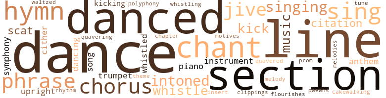
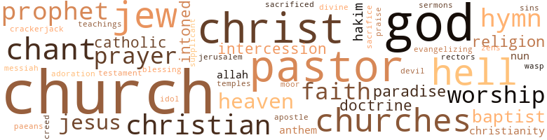

King Strut, by Stone, Charles Sumner (1970)
125 music-related terms matched in this text.
Most frequent terms in this topic: dance (9); danced (9); section (8); line (7); chant (6)
cakewalk.v.01
Definition: perform the cakewalk dance
| word | sentence |
|---|---|
| cakewalking | Within seconds , their heads would rise and they would return to cakewalking as if there had been no inter - ruption in their gaited exercise . |
chant.n.01
Definition: a repetitive song in which as many syllables as necessary are assigned to a single tone
| word | sentence |
|---|---|
| chants | Applause and chants of support for a black man ex - coriating white people is nothing more than a therapeutic session on a public couch , but the same black man who bows his head , shuffles and serves the white man in the imperial sanctity of his whiteness will also snatch any occasion to cast off the obsequies of his subservience by affirming support of those who dynamite the fortress of white racism . |
| chant | Threading their way through the crowd , they struck up a chant : " Hiram is our Congressman ! |
| chant | The chant billowed across the thousands of black heads stand - ing around the speaker 's platform and swelled into a thundering crescendo of triumphant voices . |
| chant | " With Hiram Quinault on the Mer - chant Marine and Fisheries Committee , he wo n't have much to do and that will keep him quiet . |
| chant | The latter had agreed to the meeting only because Hiram had told McMaster 's administrative assistant he intended to leave the Mer - chant Marine and Fisheries Committee . |
| chant | " Mr. Chairman , I would like your permission to leave the Mer - chant Marine and Fisheries Committee , sir , and if you were so in - clined , your support for my new committee assignment , sir . " |
| chant | The crowd began an excited chant . |
chapter.n.01
Definition: a subdivision of a written work; usually numbered and titled
| word | sentence |
|---|---|
| chapter | He knew the Republican candidate might not beat his brother , but Richard defi - nitely could not win if the powerful Ohio chapter of the BGWM union with its national resources was arrayed against him . |
chorus.n.01
Definition: any utterance produced simultaneously by a group
| word | sentence |
|---|---|
| chorus | The last words , from a popular Baptist hymn , " On Higher Ground , " evoked a chorus of " amens " and " Yes , tell it " from the middle-aged women . |
| chorus | He was tall , blond , ruddy-complexioned , with piercingly blue eyes and a rectangular jaw that made you want to sing a chorus of " America , the Beautiful " when you saw him for the first time . |
| chorus | A boisterous chorus of " ayes " rang out . |
| chorus | Those words are from my favorite hymn and before you leave here today , I wonder if you would join me in a chorus of ' In the Cross of Christ I Glory . ' |
clipping.n.01
Definition: an excerpt cut from a newspaper or magazine
| word | sentence |
|---|---|
| clippings | In Gore 's office , a top-secret file cluttered with pictures , tapes , reels of film , sworn affidavits and newspaper clippings of every high official 's life was fortressed under lock and key in a steel filing cabinet . |
cornet.n.01
Definition: a brass musical instrument with a brilliant tone; has a narrow tube and a flared bell and is played by means of valves
| word | sentence |
|---|---|
| trumpet | He swung gently into a couple of dreamy , let 's - dance-slowly-and-cuddle melodies , all aided by a growling muted trumpet that commanded its listeners to ready themselves for some quick copulatory activity with their partners . |
| trumpet | As the music ended on a mournful trumpet growl , Quinault held Melanie Cora for a moment . |
dance.n.01
Definition: an artistic form of nonverbal communication
| word | sentence |
|---|---|
| dances | Occa - sionally , he lowered his head to make a humorous remark - " The Secretary of Defense dances like he 's leading an army into battle " . . . " Senator Finsbury is so drunk he 's dancing with the wife of one of his enemies . |
| dance | " I hope I may have the pleasure later in the evening of another dance , Mrs. Kingston . " |
| dances | Save me a couple of dances , wo n't you ? |
dance.v.02
Definition: move in a pattern; usually to musical accompaniment; do or perform a dance
| word | sentence |
|---|---|
| danced | I want to - " From somewhere deep in Quinault 's consciousness , he became aware of the strains of a familiar melody , and the words danced in his mind , " . . . by the dawn 's early light . . . what so proudly we hail . . . " Christ , our national anthem ! |
| dancing | Occa - sionally , he lowered his head to make a humorous remark - " The Secretary of Defense dances like he 's leading an army into battle " . . . " Senator Finsbury is so drunk he 's dancing with the wife of one of his enemies . |
dance.v.03
Definition: skip, leap, or move up and down or sideways
| word | sentence |
|---|---|
| dance | You can sing to entertain white folks , and you can dance to entertain them and play ball or box for them all you want . |
| dance | " After all , you people are known fo ' yo ' ability to dance . |
| dance | " This is one little colored boy , unfortunately , who never learned to dance . |
| danced | I wonder if your husband would mind if I danced with his wife . |
| dance | What does a Southern white woman do when a Negro asks her to dance at a public function ? |
| danced | And Quinault 's rubbing up against her breasts as he danced , was it accidental ? |
| dance | That was about the most courageous way she could find to say yes , I do want to dance with you again . |
| danced | I noticed as you two danced that the official manner that charac - terizes such moments was decidedly absent . " |
| dance | Mr. President , I just wanted your permission to dance with your lovely wife . " |
| dancing | It 's bad enough getting stuck with niggers in politics , but it leads to this very same kind of shit , socializing , dancing with your wife . |
| dance | Damn , poor Melanie Cora 's about to shit a brick , being asked to dance with a nigger . |
| dance | She 's just lucky that jungle cannibal from Songhai has n't asked her to dance with him . |
| danced | He pulled her closer to him as they danced . |
| danced | Ever since that odd evening at the White House when she had danced with Quinault , she had consciously convinced herself the evening 's events were caused by the happy merger of liquor and gay atmosphere . |
| danced | He carried the evening off as if he had attended all of Inch Cade 's parties and danced with Southern white women all his life . |
| danced | Only a few guests noticed that he danced with Melanie Cora three times . |
| danced | He had wanted to hop in the sack with Melanie Cora ever since he had danced with her the night of the White House dinner for the Songhai prime minister . |
flourish.n.05
Definition: (music) a short lively tune played on brass instruments
| word | sentence |
|---|---|
| flourishes | The airstrip was a human collage of firm handshakes , bear-hug embraces , cheers , band flourishes and the furious waving by school children of the American flag and the new San Cordoban flag . |
hymn.n.01
Definition: a song of praise (to God or to a saint or to a nation)
| word | sentence |
|---|---|
| hymn | The last words , from a popular Baptist hymn , " On Higher Ground , " evoked a chorus of " amens " and " Yes , tell it " from the middle-aged women . |
| hymn | A favorite hymn in the black community promises that " I 'm going to be ready to walk in Jerusalem just like John . " |
| hymn | And to make sure the promised land was still attainable through group unity in case the individual faltered , another favorite black hymn proclaimed the order to " walk together , children ! |
| anthem | I want to - " From somewhere deep in Quinault 's consciousness , he became aware of the strains of a familiar melody , and the words danced in his mind , " . . . by the dawn 's early light . . . what so proudly we hail . . . " Christ , our national anthem ! |
| anthem | As the band finished the national anthem , the crowd began yelling at Quinault . |
| hymns | They shout , clap their hands and sing hymns . |
| hymn | Those words are from my favorite hymn and before you leave here today , I wonder if you would join me in a chorus of ' In the Cross of Christ I Glory . ' |
| hymn | Early in his life , when Quinault had toyed with the idea of going into the ministry , he had discovered this hymn and recognized the value of the words for his gangling physique . |
insert.n.01
Definition: a folded section placed between the leaves of another publication
| word | sentence |
|---|---|
| insert | They even left in his picture , a half-column insert in the second paragraph of the story . |
kick.v.04
Definition: kick a leg up
| word | sentence |
|---|---|
| kick | Who in the hell was some nigguh to come along and kick over the traces when billions of dollars and the security of this country were at stake ? |
| kick | When this thing breaks , do n't you think Congress will be ready to kick Quinault out ? |
| kicking | I did enjoy kicking Lee in the ass , though . " |
| kick | No hard feelings if we kick you out of Congress , are there ? |
| kicking | The Con - gress just did n't go around kicking its members out , no matter what they did . |
motif.n.02
Definition: a theme that is repeated or elaborated in a piece of music
| word | sentence |
|---|---|
| motives | Many in this great body have impugned my motives for introducing the Quinault Amendment . |
music.n.01
Definition: an artistic form of auditory communication incorporating instrumental or vocal tones in a structured and continuous manner
| word | sentence |
|---|---|
| music | On the pretext of trying to make those guests still seated at their tables feel at home , Melanie Cora began gliding from table to table , chatting briefly with the guests , welcoming them and urging them to " dance to this wonderful music we brought heah just for y' all . " |
| music | As the music ended on a mournful trumpet growl , Quinault held Melanie Cora for a moment . |
| music | The music stopped abruptly . |
musical_instrument.n.01
Definition: any of various devices or contrivances that can be used to produce musical tones or sounds
| word | sentence |
|---|---|
| instruments | I have read the reports of the various authorities , men far more skilled in the instruments of war than I , men more knowledgeable about the limitations of man-made weaponry than I. I have studied the vol - umes of testimony we have already taken with more to come . |
| instrument | The Speaker looked down at his desk as though it held a magic electronic instrument that had been able to record the true differ - ence in volume between the two votes . |
paean.n.02
Definition: (ancient Greece) a hymn of praise (especially one sung in ancient Greece to invoke or thank a deity)
| word | sentence |
|---|---|
| paeans | Their occasional appearances together at fund-raising events , news-making dinners and nation - ally significant political affairs were always the subject of paeans of black thanksgiving . |
phrase.n.02
Definition: a short musical passage
| word | sentence |
|---|---|
| phrase | The first time Shorewood used the phrase , " talking black by day and sleeping white by night , " a predominantly lower-income black crowd in the Oakwood-Kenwood Housing project roared with de - light . |
| phrase | Upton paused deliberately , trying to phrase the next question without offending Quinault . |
| phrases | Sure , they 're crazy about Quinault , but I 'll bet you that when we kick him out of Congress , they wo n't do a thing but shoot their mouths off and yell ' white racism , repression ' and all of those other phrases they trot out . |
| phrase | Besides , Melanie Cora sure in hell was no ordinary white lady - Quinault laughed to himself as he mentally used the phrase , white lady . |
piano.n.01
Definition: a keyboard instrument that is played by depressing keys that cause hammers to strike tuned strings and produce sounds
| word | sentence |
|---|---|
| piano | Prez was pounding the piano and Koumbi had abandoned his diplomatic straitjacket and had sat down next to him , clapping his hands as the small , bald - headed , rotund Prez drove the band through several swinging numbers . |
| piano | Several of the Negro guests for whom Prez had been a longtime favorite crowded around his piano , encouraging the mu - sician . |
polyphony.n.01
Definition: music arranged in parts for several voices or instruments
| word | sentence |
|---|---|
| polyphony | Simultaneously , both the gallery spectators and the Congress - men began jabbering in a polyphony of relief , surprise , bewilder - ment , anger and joy . |
promenade.n.01
Definition: a formal ball held for a school class toward the end of the academic year
| word | sentence |
|---|---|
| prom | " As I was saying , we 've got to have some prom - inent liberal out there in front to offset Quinault 's expected charge of racism . |
quotation.n.02
Definition: a passage or expression that is quoted or cited
| word | sentence |
|---|---|
| citation | Five months later , the appellate court overruled the contempt of court citation against Hiram , and reprimanded him for " chal - lenging the integrity of the court system to which he had taken an oath as an officer of the court to uphold . " |
| citations | It was a brilliantly woven legal rationale , outlining in compelling eloquence with a pro- fusion of legal citations why O'Flaherty deserved a change of venue . |
rhythm.n.04
Definition: the arrangement of spoken words alternating stressed and unstressed elements
| word | sentence |
|---|---|
| rhythm | Ah 'd be right pleased to have you show me something about you folks ' rhythm . " |
scat.n.01
Definition: singing jazz; the singer substitutes nonsense syllables for the words of the song and tries to sound like a musical instrument
| word | sentence |
|---|---|
| scat | " You go back , Lawrence , and tell those miserable cocksuckers that if they want this scat , it will cost them a cool million dollars in cash . |
| scat | In the back scat of the speeding car , Darlene leaned forward to chime in . |
section.n.01
Definition: a self-contained part of a larger composition (written or musical)
| word | sentence |
|---|---|
| section | That afternoon , three of you will petition the chairman for an emergency committee meeting of the Armed Services Com - mittee in seven days - " " As provided for in rule eleven , section 734 , paragraph 25 in the Rules of the House Manual , " said Upton with a broad yawn , barely able to stifle his elation at being able to reel off such inner sanctum erudition about House regulations . |
| section | THE LARGE red-brick church with its yellow and blue neon cross proclaiming " Jesus Saves " was one of the largest Baptist churches in the black section of Brooklyn . |
| section | This particular section of Brooklyn 's black ghetto had achieved the dubious distinction of having the highest crime rate in the borough and the second highest in the entire city of New York . |
| section | But it 's there and I can read you the precise rule and section in the Rules of the House of Representa - tives . |
| section | She had never learned to drive and the bus ride to her small house in the northeast section of Washington known as Brookland took at least an hour . |
| section | As integration had opened up the predominantly white section west of Rock Creek Park , Brookland had lost some of its historical luster of colored middle-class attainment . |
| section | Trent ran down the aisle of the first-class section , anxiously seeking the familiar tan features . |
| section | The car was later discovered to be stolen and was found in an abandoned alley behind a house in the small Negro section of Whittier . |
sing.v.02
Definition: produce tones with the voice
| word | sentence |
|---|---|
| sing | You can sing to entertain white folks , and you can dance to entertain them and play ball or box for them all you want . |
| sing | He was tall , blond , ruddy-complexioned , with piercingly blue eyes and a rectangular jaw that made you want to sing a chorus of " America , the Beautiful " when you saw him for the first time . |
| sing | They shout , clap their hands and sing hymns . |
| sing | Humming the non-song the contented sing to themselves , she locked the door of the office , dropped the envelope in the package chute on the wall and walked down the stairs , going out through a little-used en - trance on Second Street . |
| Sing | . . . " Sing it , sweet Jesus . " |
| singing | He visualized himself , standing in a pulpit with his arms outstretched as if he himself were crucified on the cross , singing the words , " towering o'er the wrecks of time , " knowing the congregation would also see their handsome shaft of skyscraper humanity as their tower of strength . |
singing.n.01
Definition: the act of singing vocal music
| word | sentence |
|---|---|
| singing | I dig Francine 's singing . |
| singing | When the singing finished , Quinault smiled benignly on his fol - lowers and asked that they forgive him for not being able to spend more time with them but that pressing legislative business needed attention . |
song.n.01
Definition: a short musical composition with words
| word | sentence |
|---|---|
| songs | The band behind the rostrum , composed mostly of black men , struck up one of the most popular songs on the national hit parade , " Strut , Miss Lucy . " |
| song | It had become Quinault 's theme song at several political rallies . |
swing.n.05
Definition: a style of jazz played by big bands popular in the 1930s; flowing rhythms but less complex than later styles of jazz
| word | sentence |
|---|---|
| jive | Dig this jive , Jack , Hiram Quinault said , ' Stop ! |
| jive | " All right , baby , you do n't have to lay all of that jive on me . |
| jive | But his death was a jive - ass bunch of bull-shit . |
symphony.n.01
Definition: a long and complex sonata for symphony orchestra
| word | sentence |
|---|---|
| symphony | With one last symphony of handshakes , pats on the cheek , arm-tugging and gentle but firm dismissal motion of his hands , Quinault squeezed through the door and slammed it shut with an authoritative clap that dared anybody to follow him . |
| symphony | He was flamboyant because he was physically beautiful and his actions simply complemented the symphony of his lifestyle . |
theme.n.03
Definition: (music) melodic subject of a musical composition
| word | sentence |
|---|---|
| theme | It had become Quinault 's theme song at several political rallies . |
tone.v.01
Definition: utter monotonously and repetitively and rhythmically
| word | sentence |
|---|---|
| intoned | " I note , " he had intoned at the press conference , " that there were no editorials denouncing my beloved colleagues when the Polish-American Congress gave a reception in these same rooms for my distinguished colleague from Chicago , nor were there cries of anguish when the Italian-American Federation executive committee held a meeting in this very same room , or the National Jewish Association tendered a birthday party in the Bankhead House Office Building for my good friend , Felix Dubinbaum from Brooklyn . |
| intoned | " General Woolsey , this committee is honored by your presence , " intoned Quinault in the most sepulchral tones his voice would per - mit without sounding facetious . |
| intoned | " There may be others in this evil jungle of conspiracy and bla - tant abuse of the public trust , " sanctimoniously intoned Vander Meer 's second column , " but these three instances are the only three this column has been able to substantiate . |
tune.n.01
Definition: a succession of notes forming a distinctive sequence
| word | sentence |
|---|---|
| line | Quinault thought of the punch line of one of his favorite jokes . |
| line | After four years of failing to get rid of him or get him in line , Chicago 's Irish political boss , Scan Emmett , decided it was time to make the best of a bad situation to bring about party unity and a political modus vivendi which the party and Hiram could both live with . |
| line | A discomfortingly omnipresent brown line that oozed from the tobacco quid in his jaws slid casu - ally out of the right side of his mouth like a dried-up estuary in the Sahara Desert . |
| line | Kalahari believed that violence should be pre-emptive , or " Move against the man before he moves against you , " and executory , or " A disciplinary mechanism to destroy black traitors and thus keep the black community in line . " |
| line | Un - thinking robots in military precision , their minds are attuned to accomplishing one goal , staying in line . |
| melody | I want to - " From somewhere deep in Quinault 's consciousness , he became aware of the strains of a familiar melody , and the words danced in his mind , " . . . by the dawn 's early light . . . what so proudly we hail . . . " Christ , our national anthem ! |
| lines | They flood the cafeterias with long lines of perspiring pink faces and annoy government workers with sidewalk traffic jams . |
| line | A well - educated man , he was a descendant of a long line of tribal chiefs which reached back into the ancient African kingdom of Songhai for which this large land-locked Central African country was named . |
| melodies | He swung gently into a couple of dreamy , let 's - dance-slowly-and-cuddle melodies , all aided by a growling muted trumpet that commanded its listeners to ready themselves for some quick copulatory activity with their partners . |
| tune | I can handle a slow tune like this . " |
| line | But there are quite a few officers ahead of him in line for an army base command . |
| lines | Make sure he lines up a few black engagements . |
upright.n.02
Definition: a piano with a vertical sounding board
| word | sentence |
|---|---|
| upright | Quinault sat upright . |
| upright | Melanie Cora sat upright . |
waltz.v.01
Definition: dance a waltz
| word | sentence |
|---|---|
| waltzed | " Ah 've been able to establish that that little one-eyed bandit , Hicks , has been paid ten thousand dollars to lead the attack on you , although he was waltzed into believin ' he is actually servin ' his country if the Congress will dump you . |
warble.v.01
Definition: sing or play with trills, alternating with the half note above or below
| word | sentence |
|---|---|
| quavering | The judge 's words were ground out between clenched teeth , his voice quavering with anger . |
| quavered | Trent pointed his finger at Quinault and his voice quavered with emotion . |
whistle.v.01
Definition: make whistling sounds
| word | sentence |
|---|---|
| whistling | By this time the crowd was cheering , applauding and whistling . |
| whistle | Millard and Melanie Cora had begun to descend the portable stairway when suddenly a deafening roar exploded from the crowd and the San Cordobans began to yell and whistle . |
| whistle | Chesterfield 's " Wow ! " and Moynihan 's whistle of impressed dis - belief were heard at the same time . |
| whistled | Quinault shook his head in admiration and half whistled into the phone . |
| whistled | There was a sharp intake of several breaths and a couple of reporters whistled in disbelief . |
| whistle | The businessman listened for a few moments , then emitted a half whistle , half breath of air . |
zither.n.01
Definition: a musical stringed instrument with strings stretched over a flat sounding board; it is laid flat and played with a plectrum and with fingers
| word | sentence |
|---|---|
| cither | But , then again , Quinault had not been chairman of the committee before cither . |
| cither | He was rarely off more than two or three votes in cither house because he would have already certained the uncertain by spending thousands of dollars to ensure the accuracy of his predictions . |
406 violence-related terms matched in this text.
Most frequent terms in this topic: fight (36); anger (24); hate (17); hated (16); balls (15)
abhor.v.01
Definition: find repugnant
| word | sentence |
|---|---|
| loathed | Women shunned him , men loathed him , political associates tolerated him , but all respected him . |
aggravation.n.01
Definition: an exasperated feeling of annoyance
| word | sentence |
|---|---|
| exasperation | Weary exasperation was all the Vice President could feel now . |
| exasperation | Late July is about the only time one never overhears a pet statement of exasperation - " Where are the white people ? " |
aggression.n.01
Definition: a disposition to behave aggressively
| word | sentence |
|---|---|
| aggression | Our President has already indicated he will ask the Congress for new powers with which to meet the threat of Communist aggression in Africa . |
anger.n.01
Definition: a strong emotion; a feeling that is oriented toward some real or supposed grievance
| word | sentence |
|---|---|
| anger | " Well , he ai n't , and he ai n't going to change , and if you bastards stick around here much longer , I 'm going to change , from em - ployed to unemployed , " said Trent in mock anger . |
| anger | While both the judge and the prosecutor had been easygoing and almost benign in their treatment of him previously , they had suddenly reacted to this new tactic with more than a little anger . |
| anger | The prosecuting attorney walked up to Hiram after the jury foreman 's request and with his beefy face reddened in anger thundered , " You ought to be disbarred for your conduct in this court . " |
| anger | The judge 's words were ground out between clenched teeth , his voice quavering with anger . |
| anger | This was that moment of perfect blackness , a giddy interval when color and pride and anger and hope all merged into a single instant of black unity . |
| anger | Upton 's face flushed in anger . |
| anger | Emmett reddened as his voice thickened with barely noticeable anger . |
| anger | Hiram smiled to himself , despite his anger at this white bastard calling him a liar . |
| anger | The word was an exclamation of incredulous anger . |
| anger | Longworthy 's grin disappeared and his eyes narrowed in anger . |
| anger | Those sky-blue cir - cles were always dancing in a constancy of happiness , even when they narrowed in stern disapproval or anger . |
| anger | McGillicuddy looked at Quinault , whose face managed to unite in an expression of both shock and anger at Hicks 's action . |
| anger | Quinault 's voice had tightened in anger . |
| anger | Was that envy because it should have been bestowed on her husband or was it anger because a nigguh Con - gressman was stealing the spotlight from her husband , the Vice President of the United States ? |
| anger | Even before the words gushed out of her mouth , Melanie Cora knew she should n't have said them , but her anger overrode her rational thoughts . |
| anger | Trent 's eyes narrowed in anger . |
| anger | I do n't want to risk that security to find out how much they love Quinault or whether they 're capable of transferring their anger over his expul - sion from Washington , D.C. to Universe , Oregon . " |
| anger | It was a subtle variation , but nonetheless pivotal in the col - lective anger and resentment white America had begun to feel toward this powerful black man . |
| anger | Simultaneously , both the gallery spectators and the Congress - men began jabbering in a polyphony of relief , surprise , bewilder - ment , anger and joy . |
| anger | He made no effort to hide his anger and disap - pointment . |
| anger | He clenched his fists in anger , pounding the arms of the leather chair . |
| anger | His face drained of color as his good eye slitted in anger . |
| anger | His eyes narrowed in anger . |
| anger | Black-shirted members of the Cetewayo Militia ringed the mansion , their arms folded , lips pressed tightly , expressionless ebony figures of contained anger . |
anger.v.02
Definition: become angry
| word | sentence |
|---|---|
| angered | Yet , he was angered when Hiram declared his intention to run . |
| angered | At the end of his first four years , Quinault had a worsening absenteeism record , no legislation with his name on it and only the now-famous Quinault Amendment which angered the labor movement and its white liberal friends . |
| angered | The response made a good front-page headline , but angered the committee . |
assail.v.01
Definition: attack someone physically or emotionally
| word | sentence |
|---|---|
| assaulting | Stocky black welfare mothers facing eviction ; skinny , processed-hair pimps with pointed-toe alligator shoes and Italian silk suits , arrested for assaulting a member of their stable of prosti - tutes or some unexpecting purchaser ; Saturday night revelers who had drunk themselves into becoming Sunday morning brawlers ; numbers runners who had long suspected that the crime syndicate with its easily arranged white lawyers would occasionally sacrifice one of them as a lesson in good discipline ; and young , frightened black kids whose marginal existence on the lifeless edge of crime had pushed over the brink into their first arrest for burglary , rob - bery or assault . |
assassinate.v.01
Definition: murder; especially of socially prominent persons
| word | sentence |
|---|---|
| assassinate | The black community had not seen through the obviously well-developed plan to politically assassinate Quinault . |
| assassinated | America 's most powerful black politician had been assassinated . |
| assassinating | What was this country coming to , people run - ning around shooting each other and assassinating our leaders . |
attack.v.01
Definition: launch an attack or assault on; begin hostilities or start warfare with
| word | sentence |
|---|---|
| assailed | Then , when assailed by their con - stituencies for " not voting to kick out that nigger , " they could claim , with no fear of contradiction , that they had indeed yelled a vote against Quinault but a " conspiracy of those nigger-loving Northerners and pinko liberals " had shouted them down . |
battle.v.01
Definition: battle or contend against in or as if in a battle
| word | sentence |
|---|---|
| battling | Yes , praying , because through these many years of fight - ing for the rights of black people , battling for the dignity of all people , I have walked with my hand in God 's . |
bombard.v.02
Definition: throw bombs at or attack with bombs
| word | sentence |
|---|---|
| bombed | Thus , every time a Kimberley black numbers runner or lieutenant bombed himself into oblivion by starting his car , a near North Side white hoodlum would walk out of his apartment house into a hail of sawed-off shotgun bullets . |
| bombed | It ought to be atom - bombed out of existence . |
brutality.n.02
Definition: a brutal barbarous savage act
| word | sentence |
|---|---|
| barbarism | The front-paged photos of black women and children being beaten by an army of club-wielding white cops and the failure of Shorewood to denounce their obviously savored barbarism wore bonuses for Hiram 's campaign - two extra prizes in the crackerjack box . |
butcher.v.01
Definition: kill (animals) usually for food consumption
| word | sentence |
|---|---|
| slaughtered | What proof do I have that America intends to one day exterminate all black people the way Hitler slaughtered the Jews ? |
character_assassination.n.01
Definition: an attack intended to ruin someone's reputation
| word | sentence |
|---|---|
| assassinations | Such reasoning was unacceptable to Kimberley ; consequently his stubborn resistance resulted in pe - riodic assassinations of his lieutenants . |
| assassination | But it was an impressive gesture - bodyguards hovering around solicitously as if their very presence could somehow deflect an intended instru - ment of assassination . |
| assassination | Ah know none of us in the South would want any black man attending one of ouah funerals if he had been the victim of what we believed was a black assassination . |
| assassination | " Black revolu - tionaries from the newly proclaimed state of Blackland in the state of Mississippi , in apparent retribution for the assassination of Hiram Elliott Quinault , shot and killed 12 United States Con - gressmen and wounded 17 others in a vicious attack at the House today . |
contemn.v.01
Definition: look down on with disdain
| word | sentence |
|---|---|
| despised | He despised this racist sonovabitch . |
| scorned | To strut is to have suffered , been ' buked and scorned , beaten and mistreated , abused and refused , humiliated and harassed , lynched and lashed , trampled and tortured , chained and choked , whipped , bombed , murdered , castrated , raped , en - slaved , cremated and politely interred . |
| despised | Seated around the horseshoe bar were the Vice President , Mel - anie Cora , Quinault , Cynthia Veasey , a petite , doe-eyed , brown - skin beauty ; the Vice President 's press aide , Hayes Saxon , and the executive secretary of the American Assembly for Inter-Racial Progress , Loy Milliken , a quiet , self-effacing and humorless Negro whom Quinault despised . |
| despised | He liked neither Quinault nor Trent , and both in turn despised him . |
craze.n.02
Definition: state of violent mental agitation
| word | sentence |
|---|---|
| frenzy | The frenzy of handclapping increased and suddenly four young men in front of the platform where Hiram stood rushed up the side steps , swooped up the startled Hiram and tossed him on their shoulders . |
| frenzy | Be self - possessed and civilized in the courtroom of the day , then let your - self be submerged in the frenzy of an orgy in the black whorehouse of the night . |
| frenzy | The room had be - come a loud frenzy of cries , shrill voices , sobs and yells . |
crucify.v.01
Definition: kill by nailing onto a cross
| word | sentence |
|---|---|
| crucified | He visualized himself , standing in a pulpit with his arms outstretched as if he himself were crucified on the cross , singing the words , " towering o'er the wrecks of time , " knowing the congregation would also see their handsome shaft of skyscraper humanity as their tower of strength . |
destroy.v.04
Definition: put (an animal) to death
| word | sentence |
|---|---|
| destroyed | And the white man has destroyed his self-respect and his manhood trying to tame it . |
| destroy | Would you destroy me , Hiram ? " |
| destroy | " No , baby , I would n't destroy you . |
| destroyed | " The people of the new nation of Blackland want you white racist swine to know that we are prepared to die to prevent any black man in this white hell from being destroyed . |
| destroy | And now you have tried to destroy him . |
| destroyed | Those who can not be politically destroyed will be physically killed . |
displeasure.n.01
Definition: the feeling of being displeased or annoyed or dissatisfied with someone or something
| word | sentence |
|---|---|
| displeasure | The quick shift from calling the President by his first name to his title was Walton 's subtle way of indicating his displeasure at Kingston 's insensitivity . |
draw.v.23
Definition: pull (a person) apart with four horses tied to his extremities, so as to execute him
| word | sentence |
|---|---|
| draw | The two men maneuvered to the couch where the President signaled Quinault to draw up his favorite rocking chair . |
| drawn | The staff has drawn up a long list of witnesses from the Department of Defense , Bureau of the Budget , distinguished scientists and engineers , prominent scholars from some of our major universities engaged in military research and well-known private authorities on military strategy . |
electrocution.n.02
Definition: killing by electric shock
| word | sentence |
|---|---|
| electrocution | There will be no electrocution tonight , baby . |
envy.n.01
Definition: a feeling of grudging admiration and desire to have something that is possessed by another
| word | sentence |
|---|---|
| envy | Was that envy because it should have been bestowed on her husband or was it anger because a nigguh Con - gressman was stealing the spotlight from her husband , the Vice President of the United States ? |
erase.v.01
Definition: remove from memory or existence
| word | sentence |
|---|---|
| erase | " You 're draggin ' your ass , " Quinault snapped with a slight smile to erase the irritation he felt at the report not being complete . |
| erase | My expulsion from Congress on the most ridiculous hearsay evidence , even before I 've been tried or indicted or con - victed by a jury of my peers , even before the completion of any investigation by the Department of Justice and only on the testi - mony gathered by a Congressional committee of nothing but ad - versary witnesses , testifies to the extent the White Establishment will go to erase any black man who refuses to bow his head in perpetual servitude . |
exterminate.v.01
Definition: kill en masse; kill on a large scale; kill many
| word | sentence |
|---|---|
| exterminated | Their strutting is the joyous rebirth of a today that was almost exterminated by a yesterday of sorrow . |
| exterminate | What proof do I have that America intends to one day exterminate all black people the way Hitler slaughtered the Jews ? |
ferociousness.n.01
Definition: the trait of extreme cruelty
| word | sentence |
|---|---|
| brutality | At each stop Hiram spoke quietly , promising " you , my people , that if I 'm elected tomorrow , there will never again be a repetition of the white racist brutality we witnessed yesterday . |
fight.n.02
Definition: the act of fighting; any contest or struggle
| word | sentence |
|---|---|
| combat | A native Georgian , he had never accepted any evidence to the contrary , even in combat , that Negroes were essentially inferior to white men . |
| fighting | Woolsey hated this swaggering nigger who had suddenly acquired the power of life and death over the magnificent fighting machine that he had carefully and lovingly built up during the last eight years as a member of the Joint Chiefs of Staff and finally as its chairman . |
| fighting | " Mr. Chairman , Members of the Armed Services Committee and fellow officers , in the last five years , the United States of America has fashioned one of the most powerful and efficient fighting machines in the history of mankind . |
| combat | The short , white-haired Brooklyn Congressman had lost a leg in overseas combat during one of the wars America periodically de - cides it must fight . |
| Fighting | Fighting for them when they needed him so desperately , had come pleading to him . |
fight.n.05
Definition: a boxing or wrestling match
| word | sentence |
|---|---|
| fight | He has never run away from a fight . |
| fight | He even dared to take the fight to the Congressional districts of the staunchest opponents of his amendment . |
| fight | The chairman was in a tough fight fo ' re-election . |
| fight | It was a matter of laughing when it was time to laugh and to be ignorant when ignorance best served the purpose and to fight when sometimes there was precious little fight left . |
| fight | The chairman of the Banking and Cur - rency Committee wants our committee not to close down the air force base in his district because he 's in a tough fight for re-election and if that base is closed down , four thousand people will be out of work . |
| fight | Yes , praying , because through these many years of fight - ing for the rights of black people , battling for the dignity of all people , I have walked with my hand in God 's . |
| fight | Nobody knew you were leading the fight . |
| fight | Twenty-two years of public service and a lifetime of fight - ing for black people all wiped out in twenty-five minutes on a mother-fuckin ' roll call . |
| fights | And a charming hostess whose intelligence fights hard not to be dimmed by her beauty . " |
| fight | We were just lucky that the one-eyed dwarf led the fight . |
| fight | And who 'll direct the fight against these bastards ? |
| fight | " I know it 's your ass , Hiram , but you ca n't just sit there and let them convict you without a fight . |
| fight | If I were you , I 'd take the fight to the black community all over this country . |
| fight | And often , when they did n't know he was fighting , when the fight was far aw ' ay , obscured by the legal jargon of an amendment or by the fact that some bill seemed to promise so much more than it would ever deliver to black people . |
| fight | Get Dave back in here and tell him to work out a speaking tour with the most important cities , concen - trating on those cities where the Congressmen live who led the fight to expel me . |
| fight | " Man , you ai n't seen no fight yet ! " |
| fight | Because of the amount involved - 1.6 billion dollars - and a controversial sentence permitting the " Secretary to allocate such funds for preliminary studies of the Combined Missile and Atomic Reactor project as he shall deem appropriate " - a floor fight had been promised by both parties . |
fight.v.02
Definition: fight against or resist strongly
| word | sentence |
|---|---|
| defending | He did a lousy job of defending himself . |
| defend | From a man being tried for his life to a matter of fact recitation which assumed not only the guilt of the defend - ant but the sentencing . |
| defending | The word had passed around on the South Side that some lawyer who was defending Double-L was raising a little hell . |
| fight | Well , do you have the backbone to fight them ? " |
| defending | The consensus was that his growing law practice of defending the undefendable , and his political showmanship in the City Council chambers , all reflected his charismatic qualities . |
| fight | Expounding on the political activities of Negroes in America , Chicago 's black alderman declared , " Is there any logical or ascer - tainable reason why the Congress of the United States should not enjoy the distinction of having black men in its chambers , as members , to fight to make this country an even greater democ - racy ? " |
| fighting | The two young men tore into each other during the next few months like two bull elephants in heat fighting over a waiting female . |
| fought | And the white community which has fought bitterly to foster white manhood in its inferiority complex from the black man 's dissem - bled sexual superiority likewise derives secret appreciation of such exploits . |
| fighting | And if you good friends whom I have served faithfully want to retire me because of what I do on Saturday night , if you think the amount of Thunderbird wine I drink and the number of women I date are the deciding qualifications instead of my long - time record of fighting for Negro people and the number of people I have saved from the white man 's jail and the electric chair , then I say to you that Negro people are doomed to an eternity of second-class citizenship . |
| fight | No matter what happens to me politically , even if you reject me , Mr. Black Justice will fight on for you because you are my Negro brothers and sisters and I love you . " |
| fighting | The small Younger had slumped down into a corner chair , lazily listening and watching the conversation , his already heavy-lidded eyes fighting to pierce the alcoholic iron curtain that usually hung between him and the rest of the world . |
| fighting | Lillian Emery , still fine , fashion-conscious and fighting forty - nine , gave the most snobbish parties on the South Side . |
| fought | Independently condemning the " Quinault Amendment " as " tyr - anny in disguise , " " forced labor , " " Federal usurpation of the right to a free labor market , " and " the destruction of free enterprise , " unions and national business organizations angrily fought Hiram 's proposal . |
| fought | And the young Negro Congressman fought back just as angrily and tenaciously . |
| fight | Nobody in his Con - gressional District dared christen a baby , go off to college , fight a war , or receive first Holy Communion without inviting McGilli - cuddy to attend . |
| fight | It was a matter of laughing when it was time to laugh and to be ignorant when ignorance best served the purpose and to fight when sometimes there was precious little fight left . |
| fought | A member of one of the oldest families in Con - necticut , Longworthy traced his ancestry back to a minuteman who had fought at Bunker Hill . |
| fought | You 've never fought for a precinct position or ward slot in your whole life . |
| fight | Soldiers merely fight them . |
| fight | He 's supported the hell out of me and he made that big speech just three days ago declar - ing he would fight any move to deprive me of the chairmanship of the Armed Services Committee . |
| defend | Longworthy knew his aide spoke truthfully and , as if he were trying hopelessly to protect the shadow of what he had once be - lieved to be an honest relationship , he would defend Kingston . |
| fight | " Hiram , ah 'm as appalled by this back - room , double-crossin ' chicanery as you are and ah 'm going to fight it . |
| fought | Somewhere in the impenetrable recesses of memory and reason conflicting thoughts fought for daylight examination . |
| fight | " Okay , we 'll never get that nigger out of Congress if we fight among ourselves . " |
| fighting | O'Flaherty and Quinault naturally developed a bitter enmity for each other , a state of affairs that began when Quinault was fighting the Sean Emmett Democratic machine in the early days of his political career . |
| fight | The short , white-haired Brooklyn Congressman had lost a leg in overseas combat during one of the wars America periodically de - cides it must fight . |
| fighting | The decision had to be made now ; hand the sword over now and surrender again or keep on fighting the war . |
| fighting | You the onliest one who 's out there fighting fo ' us . " |
| fighting | I 'm go - ing to keep on fighting you and I hope you wo n't take it personally . " |
| fought | " Gore thpeaking , " he growled in the lisp he had fought all his life to control . |
| fought | It becomes an even greater crime when a bril - liant and dedicated American statesman who has fought all his life for his people is not able to enjoy the good life . " |
| fight | Man , you 've got to fight this thing ! " |
| fighting | " Hiram has been fighting for Negroes all his life and what have they given him ? |
| fight | McGillicuddy smiled and shook his head as he watched Quinault , a parade marshal going to fight the battle of blackness . |
| fight | " You know , Bonny , " McGillicuddy begun slowly , " if it wore just mo , I 'd fight you rotten bastards down to the end . |
| fight | . . . " Mr. Quinault , do you intend to fight the move to expel you ? " |
| fight | ... " I 'll decide whether or not I 'm going to fight the expulsion resolution when I return . " |
| fighting | They were good years , years of fighting for black people , for their jobs , their homes , their dignity . |
| fighting | And often , when they did n't know he was fighting , when the fight was far aw ' ay , obscured by the legal jargon of an amendment or by the fact that some bill seemed to promise so much more than it would ever deliver to black people . |
| fought | Years ago , back in the days when he had fought alone , car - ried the weight of his blackness and the blackness of his people on only his shoulders , they would have rallied to his support , but now , after he had forged the way , it was different . |
| fight | I 've been listening to all of you all weekend , trying to convince me to come back and fight . |
| fight | But there 's got to be something to fight for . |
| fighting | But I 've got to find out and I 've got to know whether America is still worth fighting for as far as the black man is concerned . |
| fought | " That 's why I have decided that this cancer must be fought . |
| fight | " Congressman , do you intend to fight to get back into Congress ? " |
| fight | " I mean , Congressman , " the woman reporter persisted , " do you intend to fight the indictment ? " lie down and let them carry me begin your Black Crusade Against be included ? " would never ask . |
| defending | Just as Shibeli 's bullet ripped into the back of Congressman Dillinger , and another tore into his chest before he fell , Kalahari , Blackland 's vice president , tossed a hand grenade into the well of the House where the acting chairman of the Armed Services Committee was standing and defending the supplementary appro - priations amendment . |
| fight | With clucks of sympathy and words of understanding , the group began to file out of the office , shaking Quinault 's hand and imploring him to " stand tall " and " fight on . " |
firearm.n.01
Definition: a portable gun
| word | sentence |
|---|---|
| firearms | All were experts in the use of firearms and karate . |
fury.n.01
Definition: a feeling of intense anger
| word | sentence |
|---|---|
| rage | Extending that rage to two other innocent victims in another room is an entirely different matter . |
| fury | Its Machiavellian prematurity and his prominence as one of the leading Negro public officials in Chicago were greeted with black rapture and white fury . |
| fury | Again , Melanie Cora wished she could have bitten the words off before they spilled out , but her fury was still washing over her . |
| rage | Quinault 's broad grin was a facade for the boiling rage inside him . |
gag.v.06
Definition: cause to retch or choke
| word | sentence |
|---|---|
| choked | To strut is to have suffered , been ' buked and scorned , beaten and mistreated , abused and refused , humiliated and harassed , lynched and lashed , trampled and tortured , chained and choked , whipped , bombed , murdered , castrated , raped , en - slaved , cremated and politely interred . |
| choked | His face was a sickly white as he choked out the words : " Oh ! |
genocide.n.01
Definition: systematic killing of a racial or cultural group
| word | sentence |
|---|---|
| genocide | Had not white America practiced a systematic genocide against an en - tire nation of blacks ? |
| genocide | In the young black female , the steato - pygia , still unfettered by the masochism of white civilization 's cor - set and obstinately undaunted by a racist culture 's genocide , rolls and swivels , oscillates and grinds . |
| genocide | I return to a country that is on the verge of declaring a national policy of genocide for all black people . |
| genocide | They would naturally ask him about his charges that America was embarking on a national policy of genocide against its black citi - zens . |
| genocide | " Congressman , you said America was preparing a program of genocide against the black people . |
gun.n.01
Definition: a weapon that discharges a missile at high velocity (especially from a metal tube or barrel)
| word | sentence |
|---|---|
| gun | He would vote for every God-damned appropriation to give the mili - tary every new gun , airplane , battleship and bomb they wanted . |
| gun | Our God , our Allah , our Supreme Being , this noble black power out of whose black loins our magnificent race has sprung , must be our hospital in time of sickness , our school in time of peace and our machine gun in time of war ! " |
| guns | He had promised the general that he would definitely get him those jet planes he wanted as well as the tanks , artillery and machine guns . |
| guns | A lieutenant colonel immediately jumped up and walked to the side of the room and began assembling a large easel stand on which he placed huge charts with graphs , figures and silhouettes of airplanes , battleships , submarines , soldiers and guns . |
| gun | Recognizing that Quinault had had some mild reservations about COMAR , both as a pacifist and as a pragmatic believer in the limitations of any " ultimate defense weapon , " a prestigious combination of scholars , businessmen , liberal politicians and national civic leaders had be - gun to put pressure on him in a series of meetings in his office . |
| gun | A colored man with a gun is liable to be mistaken for anything but a hunter in this country . " |
| guns | Ropes are no longer used , only bombs , machine guns , shotguns and court sentences . |
| guns | Except Blackland had no army , insufficient guns , and when the power and might of the Mississippi National Guard , let alone the United States Army , moved against Blackland , that was going to be " all she wrote . " |
| gun | it was a gun ! |
| gun | One was the copyrighted television net - work still of the film showing a glinting gun barrel poking between the curtains . |
| guns | My god , some of the niggers were standing up in the gallery and firing guns ! |
| guns | Drop your guns ! |
| guns | Told that a group of Negroes had started firing guns in the House of Repre - sentatives , the police simply began arresting every Negro they saw . |
| gun | Shit , he had gotten rid of his gun . |
gun.v.01
Definition: shoot with a gun
| word | sentence |
|---|---|
| gunned | To him , they could be gunned down just like anybody else . |
| gunned | " Brothers and sisters , on this , the tenth anniversary of the as - sassination of our beloved leader , Nathaniel X , who was gunned down in Chicago by white pigs wearing police uniforms , we come together to forge a new nation on the ashes of his remains . |
| gunned | On these two dates , two black men destroyed a whole mess of honkies , gunned them down like pigs and wasted them ! " |
| gunned | Your mothers and your daughters will be gunned down and your cities leveled to the ground ! |
| gunned | As the first two rushed through the doors , their pistols drawn , they were gunned down before they were able to take aim . |
harassment.n.01
Definition: a feeling of intense annoyance caused by being tormented
| word | sentence |
|---|---|
| harassments | But they guaranteed him two highly prized con - siderations : complete freedom for his organization from police arrests or harassments and a South Side monopoly . |
hate.n.01
Definition: the emotion of intense dislike; a feeling of dislike so strong that it demands action
| word | sentence |
|---|---|
| hate | Negro men who have been unable to find work because of the race hate in these unions have been embar - rassed ! |
| hatred | His hatred for " those wooly - headed savages who have the eternal mentality of children " was historical , unreserved and total . |
| hatred | His unconcealed contempt for Hiram and his enduring hatred for Negroes fused into the mini - mum amount of words civilized behavior permitted . |
| hatred | But Hiram also knew that McMaster believed the racial hatred of the Alabamian chairman of the Armed Services Com - mittee would prevent his assignment to that committee . |
| hate | This was Kalahari , Vice - Chairman of the Call Committee and a black spirit of meanness inhabiting a bottomless heart of hate for all whites . |
| hate | We have been pilloried as divisive hatemongers and spreaders of hate . |
| hate | Can you dig your hate for these white pigs ? |
| hate | This act of generosity had discharged a flood of newspaper editorials and speeches on the floor of Congress denouncing Quinault for letting " these black purveyors of hate , these advo - cates of separatism use the hallowed halls of the Congress of the United States for their malevolent purpose . " |
| hatred | Few of Frances Harss 's colleagues took the apology at face value , knowing her unshielded hatred for Hiram Quinault . |
| hatred | Still , Quinault secretly hoped that love would one day overcome the white man 's implac - able hatred of those whose epidermal tissue was afflicted with color . |
| hate | When a black man struts , he reopens the Pandora 's box of white hate and dares its evil con - tents to conquer his soul . |
| hatred | Longworthy 's wife had long shared her husband 's implacable hatred of the boorish Kingston and maintained an unyielding silence on the events surrounding his death . |
| hatred | Even Melanie Cora could cut through the prison of her hatred of Negroes and recognize beauty when she saw it , whether it appeared in the form of an exquisite black woman or an irresistible sex symbol of blackness . |
| hatred | With Con - gressman Tom Hardee present , a member of tire Armed Services Committee who had developed a close personal working relation - ship with Delia , Dodson laid out the whole plan to politically destroy Quinault , appealing simultaneously to her on four levels : her newly incubated hatred of Quinault , her sense of duty to America , her greed with the promise of $ 10,000 ( $ 5,000 down immediately if she agreed ) and her job security with an iron-clad agreement she would be retained by the Armed Services Commit - tee if Quinault lost his chairmanship or was expelled from Con - gress . |
| hate | A line of sun-glassed , bearded , head-shaved black men wearing bright - colored dashikis stood behind the three men , their arms folded , their faces openly proclaiming their hate . |
| hatred | Yet , today that love was displaced by a scorching hatred . |
hate.v.01
Definition: dislike intensely; feel antipathy or aversion towards
| word | sentence |
|---|---|
| hates | You know , a good colored man - and think about this for a mo - ment , friends - a good colored man is one who hates himself . |
| hated | She 's hated Quinault 's guts ever since he voted against putting that army training ground in Penn - sylvania . |
| hated | And the irony of it all was that many of them hated Quinault as much as he did . |
| hates | At these sessions , Hiram stressed his limitations on the Merchant Marine and Fisheries Committee as long as a " Southern bigot who hates Negroes presides over its matters . " |
| detested | McMaster detested Negroes with a neurotic passion . |
| hated | As much as the lethargic , semiliterate white South Carolinian hated the energetic black Chicagoan and would just as soon not have had him on his com - mittee , it still cast a committee chairman in an unfavorable light when any Congressman wanted to change . |
| hates | And he hates himself and promises that one day , you sorry mother-fucker , I 'll be in a position to take you on as an equal . |
| hates | That dirty old bastard hates Negroes and looks like a bowl of last Monday 's mashed potatoes with a suit and tie on . |
| hates | Besides , McMaster hates my guts so much , I just do n't exist as far as he 's concerned . |
| hated | " Mc - Master hated you because you were a Negro and hated me because I was a damn yankee . |
| hated | " Mc - Master hated you because you were a Negro and hated me because I was a damn yankee . |
| hate | I 'd hate like hell to have to make a choice one day . " |
| hate | " I 'd hate to have you make that choice , too . |
| hated | He knew Mrs. Harss hated him with a pas - sion and after what had happened on the opening day of Con - gress , he still was n't too sure about Upton , although Guppie had made a beautiful speech on his behalf in the Democratic Caucus about Quinault 's accession to the chairmanship . |
| hated | Gawdamned , he hated a happy nigguh . |
| hated | The Vice President came from that part of the United States that hated the black man . |
| hated | Well , the Vice President 's wife now hated him . |
| hated | Woolsey hated this swaggering nigger who had suddenly acquired the power of life and death over the magnificent fighting machine that he had carefully and lovingly built up during the last eight years as a member of the Joint Chiefs of Staff and finally as its chairman . |
| hate | The inability of a society to blame or extract payment for the death of one of its most treasured leaders would leave an ugly scar of suspicion and hate on the body politic as long as punishment could not be levied . |
| hated | Quinault and a privileged few knew two things : Longworthy hated Kingston , and Longworthy had been a very sick man when Quinault saw him in February , two months before he died of poisoning . |
| hate | Did he hate him that much ? |
| hated | Quinault knew Dulson was a bigot and that he especially hated him for becoming chairman of the Armed Services Committee . |
| hated | The reporter was from a large New York newspaper that hated Quinault passionately . |
| hate | I 'd hate to predict what the final outcome would be . |
| hate | Besides , does n't he hate your guts ? " |
| hate | If you hate a particular phenomenon , as in this instance Melanie Cora hated black people , then you are repulsed by this phe - nomenon in profusion . |
| hated | If you hate a particular phenomenon , as in this instance Melanie Cora hated black people , then you are repulsed by this phe - nomenon in profusion . |
| hating | Quinault grinned , sensing Melanie Cora 's internal struggle , knowing she was relaxed just enough to be able to initiate con - versation , yet hating herself for doing it . |
| hate | Parker did n't hate Negroes . |
| detested | It was no secret that Kingston detested the aging FBI director and had already indicated through a series of obviously planted leaks to the press that he planned to replace him in November on his sixty-fifth birthday with the Oklahoma Attorney General , a close friend of Kingston . |
| hated | And Delia hated every minute of her bureaucratic drudgery . |
| hate | I hate to inconvenience you , " she pleaded . |
| hate | What proof do I have that whites hate blacks ? |
| hated | He hated that fuckin ' miserable state ! |
homicide.n.01
Definition: the killing of a human being by another human being
| word | sentence |
|---|---|
| homicide | There was no substantiate evidence of homicide . |
hostility.n.02
Definition: a state of deep-seated ill-will
| word | sentence |
|---|---|
| antagonism | But in the inner councils of the nation 's capital , the truth was widely accepted with the realistic acknowledgment that , one , it could not be substantiated ; two , who would believe it ; and three , even if one were to make such a public charge , how would he preserve his political career from possible destruction by the monumental antagonism of the FBI ? |
| enmity | O'Flaherty and Quinault naturally developed a bitter enmity for each other , a state of affairs that began when Quinault was fighting the Sean Emmett Democratic machine in the early days of his political career . |
hurt.v.04
Definition: cause damage or affect negatively
| word | sentence |
|---|---|
| hurt | " That 's a crude way of putting it , Guppie , but they wo n't be hurt too badly . |
indignation.n.01
Definition: a feeling of righteous anger
| word | sentence |
|---|---|
| outrage | A few political leaders called press conferences , there was a smattering of rallies in several cities , but there was no na - tionally organized black cry of outrage . |
infuriate.v.01
Definition: make furious
| word | sentence |
|---|---|
| infuriate | Not only was Hiram obviously not con - trolled by the machine , but his politically erratic behavior contin - ued to infuriate the political bosses of the city . |
| infuriated | She had wanted to know why she could n't see him that week and his feeble excuse about the pressures of legislation had infuriated her . |
injury.n.01
Definition: any physical damage to the body caused by violence or accident or fracture etc.
| word | sentence |
|---|---|
| hurt | He would have to travel far to match her licorice silky hair and the soft gray eyes that spoke simultaneously of an enthusiastic barefoot child and childhood hurt . |
| hurt | He understands better than the political or social scientist what makes the government tick and , in fact , what makes the world hum and hurt - compromise , cunt and cash . |
invade.v.01
Definition: march aggressively into another's territory by military force for the purposes of conquest and occupation
| word | sentence |
|---|---|
| invading | These were the only doubts invading Hiram 's mind . |
| invaded | Policemen , housing inspec - tors , health department inspectors , zoning officials , firemen and building inspectors invaded the area like a swarm of hard-up drones hungrily following their queen bee . |
| invaded | " Come on , Dave , did the chairman see the President three weeks ago about the Lake Michigan Base ? " persisted one of a group of reporters who had invaded Quinault 's office that after - noon following the announcement . |
jab.n.02
Definition: a quick short straight punch
| word | sentence |
|---|---|
| jab | Hiram wanted one more jab at Thompson . |
kick.v.04
Definition: kick a leg up
| word | sentence |
|---|---|
| kick | Who in the hell was some nigguh to come along and kick over the traces when billions of dollars and the security of this country were at stake ? |
| kick | When this thing breaks , do n't you think Congress will be ready to kick Quinault out ? |
| kicking | I did enjoy kicking Lee in the ass , though . " |
| kick | No hard feelings if we kick you out of Congress , are there ? |
| kicking | The Con - gress just did n't go around kicking its members out , no matter what they did . |
kick_back.v.02
Definition: spring back, as from a forceful thrust
| word | sentence |
|---|---|
| kicked | We should have kicked him out years ago . " |
| kicked | " Maybe so , but the Lord almost got his ass kicked out there today on the House floor , " laughed Towson . |
| kick | Jack , it means that when those ofay mother-fuckers come to kick your ass out , they have got to bring proof you have been served with a summons before they lock you out . |
| kick | I do n't know what I 'd do if I could n't kick a few ideas around like this . |
| kick | You can beat them , kick them , deny them jobs , keep them sardined in filthy shacks and when they protest , throw them in jail . |
| kicked | This was a time for enjoyment , a time for unchained happiness that could be kicked high in the air without fear of retribution from white bastard cops . |
| kick | I 'll lower my eyes , soften my voice , be very respectful and nod and say " yes sir " after every other word and kiss your ass until the day comes when I can kick it . |
| kicked | " You mean those bastards are going to try and get me kicked out of Congress just because I 'm opposed to that fuckin ' raid on the public treasury ? " |
| kick | Then , when assailed by their con - stituencies for " not voting to kick out that nigger , " they could claim , with no fear of contradiction , that they had indeed yelled a vote against Quinault but a " conspiracy of those nigger-loving Northerners and pinko liberals " had shouted them down . |
| kicked | I worked like hell in January trying to get that nigger kicked out . " |
| kick | Sure , they 're crazy about Quinault , but I 'll bet you that when we kick him out of Congress , they wo n't do a thing but shoot their mouths off and yell ' white racism , repression ' and all of those other phrases they trot out . |
| kicked | What the hell , we 've had our asses kicked so long and so often , one more time wo n't hurt . |
| kicked | She had kicked of ! |
| kicking | They support me only because I 'm on top and I 've been kicking Whitey in his ass . |
| kicked | According to a wire service story in the Chicago Union and the Washington Register this morning , practically every Congressman is being flooded with letters , demanding that I be kicked out of Congress . |
| kick | Black people are ready to kick ass and take names - Whitey 's namesl " " Come off it , Dave , " laughed Quinault . |
| kicked | " That no-good arrogant coon ought to be kicked out of Congress ! " |
| Kick | " Kick him out . |
| Kick | Kick him out of Congress ? |
| kicking | They could talk them - selves purple on that House floor about kicking him out , but with all of the whole South and the Republicans voting against him , they still were n't going to be able to get the required two-thirds vote for censure . |
| kicked | Nigguhs would pitch a bitch if the Congress kicked out their black hero ! |
| kicked | He was an arrogant nigger and deserved to be kicked out of Con - gress , but killing him , that 's going too far . |
kill.v.10
Definition: cause the death of, without intention
| word | sentence |
|---|---|
| killing | " Still , but killing a man and your wife who were in bed together is one thing . |
| killed | I ai n't got two naked quarters to rub together and I done told everybody in Chicago that I done killed them . " |
| killing | Sev - eral prominent national " Negro leaders " were persuaded to pub - licly denounce Hiram for his " intemperate action in killing critical legislation that benefited the whole country and not just a few . |
| kill | " To love each other , kill our enemies and live in peace ! " boomed the crowd . |
| killed | " Yes , brothers and sisters , Nat Turner killed sixty whites . |
| kill | We had to wait almost a hundred years before another black man could get up enough courage to kill honkies . |
| kill | After all , she just might kill my invita - tions to the White House . " |
| kill | These arc the men who have been so busy learning how to kill people , they have n't had the time or the compassion to learn that all men are created equal . |
| killed | If somebody had told her it was a sexual urge , she would have killed him on the spot . |
| killed | This one was for Nat Turner and a thousand other black men who had been killed and maimed and castrated physically , mentally or spiritually for the preservation of white womanhood . |
| kill | How about that Congressman who ran a policeman down recently , tried to kill him ? |
| Kill | Kill , blow up and disappear ! |
| kill | I 'm giving you this one because I ca n't find it in my heart to kill my brother 's political career . |
| kill | Sorry we had to kill your son , Mrs. Jones , but we thought he had stolen those groceries . |
| killed | Those who can not be politically destroyed will be physically killed . |
| killing | He was an arrogant nigger and deserved to be kicked out of Con - gress , but killing him , that 's going too far . |
| killing | America 's getting to be like those damned South American re - publics down there where somebody changes the administration by killing the president and letting the army take over . |
| kill | Do n't kill wantonly . |
| killed | What a way to go , killed by a brother . |
| killed | " Black revolu - tionaries from the newly proclaimed state of Blackland in the state of Mississippi , in apparent retribution for the assassination of Hiram Elliott Quinault , shot and killed 12 United States Con - gressmen and wounded 17 others in a vicious attack at the House today . |
| killed | While some of the Blacklandcrs have either been killed or captured , police estimate that most of them have escaped . |
| killed | In sporadic shooting incidents , four Negroes were killed in Mary - land , two in Delaware and a young child in Des Moines , Iowa . |
killing.n.01
Definition: an event that causes someone to die
| word | sentence |
|---|---|
| killing | Ah read about your killing that moose up there in Canada . |
lynch.v.01
Definition: kill without legal sanction
| word | sentence |
|---|---|
| lynched | To strut is to have suffered , been ' buked and scorned , beaten and mistreated , abused and refused , humiliated and harassed , lynched and lashed , trampled and tortured , chained and choked , whipped , bombed , murdered , castrated , raped , en - slaved , cremated and politely interred . |
| lynched | Shit , nigguhs have been fucking white women all their lives and getting lynched for it . |
| lynching | We re lynching Quinault even before he 's been formally accused . " |
| lynching | . . . " Black people in America just do n't accept the white man 's moral concepts , particularly after the white man has spent half of America 's existence keeping us in slavery and the second half lynching us , bombing our homes , denying us freedom of op - portunity and equal protection under the laws . |
lynching.n.01
Definition: putting a person to death by mob action without due process of law
| word | sentence |
|---|---|
| lynching | She glared at the silenced diaphragm and could have lovingly sacrificed Quinault to a lynching mob . |
mace.n.01
Definition: (trademark) a liquid that temporarily disables a person; prepared as an aerosol and sprayed in the face, it irritates the eyes and causes dizziness and immobilization
| word | sentence |
|---|---|
| maces | High - ceilinged and poorly lit by a huge , unimaginative brass-rimmed chandelier suspended in the center , the room was decorated with an abundance of brass heraldic emblems of fasces , shields and maces on the walls , door panels and the oversized rectangular lamp bases in each of the four corners . |
malice.n.01
Definition: feeling a need to see others suffer
| word | sentence |
|---|---|
| malice | " I harbor no malice toward the distinguished gentleman from Illinois and he knows I am not motivated by political considerations . |
| spite | De - spite all of the morally pretentious reasons for the dinner , it had actually been birthed in the councils of the Democratic machine . |
manslaughter.n.01
Definition: homicide without malice aforethought
| word | sentence |
|---|---|
| manslaughter | Double-L was guilty of the shoot - ings , but it was , to Quinault , a clear case of manslaughter . |
massacre.v.01
Definition: kill a large number of people indiscriminately
| word | sentence |
|---|---|
| massacred | Had not white America massacred hundreds of thousands of Indians ? |
| massacred | America is finally going to achieve what James Fenimore Cooper and Thomas Dixon , Jr. predicted centuries ago - that one day America either had to set up an over - seas colony for its black citizens or they would be massacred in a terrible racial holocaust . |
murder.n.01
Definition: unlawful premeditated killing of a human being by a human being
| word | sentence |
|---|---|
| murder | The prosecution was going for murder in the first degree . |
| murder | The debate raged on until the prosecution concluded its arguments and the jury was sent out to find a directed verdict of murder in the first degree . |
| murder | Two days later , the new country of Blackland called a press conference in the Ethiopian Baptist Church to proclaim its inten - tion to come into existence in the state of Mississippi on March 5th , " the day of Crispus Attucks ' murder by honkie racists . " |
| murder | We can hit , run , bomb , murder and disappear before the swine know what hit them . " |
| murder | The night following Quinault 's murder , the lights in Blackland 's Nat Turner Memorial Hall burned late . |
murder.v.01
Definition: kill intentionally and with premeditation
| word | sentence |
|---|---|
| murdered | People read the Chicago Vanguard to find out who was the latest nigguh to get a rectum full of bullets running out of some chick 's house or who was murdered in the most gruesome manner . " |
| slain | He shot a moose , and the country 's newspapers published the wire photo of the tall , handsome Negro Congressman standing with one foot on the back of the slain moose . |
| murdering | When they do , they will find some excuse to move in here and begin arresting us and maybe even murdering us . |
musket_ball.n.01
Definition: a solid projectile that is shot by a musket
| word | sentence |
|---|---|
| balls | " Now , do n't get your balls in an uproar , Dave , " said Towson , smiling . |
| balls | He 's got to have some kind of balls . |
| ball | You can sing to entertain white folks , and you can dance to entertain them and play ball or box for them all you want . |
| balls | He did n't know his old man had that kind of balls . |
| balls | If you were an integrationist you could be forgiven almost any sin of transgres - sion because integrationists had no balls . |
| ball | We had ourselves a ball . " |
| balls | Tell them I said to go fuck themselves , especially that sorry-ass Uncle Tom Evans and his plantation boss , the fat Irishman who 's had his fists around Evans ' balls so long , Evans think 's he 's got a white dick . " |
| balls | It means we can break their balls . " |
| balls | " Honey , I 've got these bastards by the balls now and I 'm going to squeeze until they scream for mercy . " |
| balls | And he could always cut Hiram 's balls off in committee if the nigger got too rambunctious , just as he had castrated " ol' Theahdoe " for voting against him on that navy plane appropriation . |
| balls | Besides , I heard he 's got himself some black woman who lives with him and is supposed to be his housekeeper but keeps his balls in hock . " |
| balls | " Hiram , you 've got more hard balls than a barrel of brass monkeys in December ! |
| balls | He was a black man with black balls . |
| balls | Well , for one thing , uh - well , Hiram , to put it very bluntly , Scotland 's not out to cut off our balls ! |
| ball | I 'm going to have a ball getting a piece of ass in a presi - dential palace . |
| balls | Baby , you 've got more balls than a barrel of monkeys . " |
| ball | " Man , I had a ball . |
| balls | I want a full investigation and I want absolute proof that the four white lieutenant colonels were promoted to full colonel after our black colonel had been in grade and I 'm going to break the Secretary 's balls with this one . " |
| balls | They like brass balls only as long as somebody else is wearing them . " |
| ball | We 're going to have a ball ! |
open_fire.v.01
Definition: start firing a weapon
| word | sentence |
|---|---|
| fire | When Longworthy assumed the Presidency , he had hoped to fire Gore as one of his first acts of office . |
| fired | Look , Hiram , what 's this about Mrs. Mostel being fired ? |
| fired | That will only open the door to rehiring the other staff members I fired . |
| fired | The ovens have already been fired . |
| fires | We are not there when the assassin fires his bullet or hands out a life sentence . " |
| fired | The hand grenade exploded simultaneously as Shibeli fired his rifle into Congressman Dillinger 's back . |
pain.v.02
Definition: cause emotional anguish or make miserable
| word | sentence |
|---|---|
| hurt | " The moment you make just one mistake on which he can capitalize , he 's going to hurt you . |
| hurt | What the hell , we 've had our asses kicked so long and so often , one more time wo n't hurt . |
pistol.n.01
Definition: a firearm that is held and fired with one hand
| word | sentence |
|---|---|
| pistols | Others had removed .38 caliber pistols and .45 Colt repeaters from their belts and pocketbooks and held them in readiness . |
| pistol | The staccato of rifle and pistol shots richocheted off the ancient House walls as Congressmen fell to the floor , wounded or dead . |
| pistols | As the first two rushed through the doors , their pistols drawn , they were gunned down before they were able to take aim . |
projectile.n.01
Definition: a weapon that is forcibly thrown or projected at a targets but is not self-propelled
| word | sentence |
|---|---|
| missiles | It 's had enough building atomic reactors and missiles , hut to combine them into one giant machine is to construct an incredible monster of death . |
| missile | They argue passionately for the construction of a seven-billion-dollar missile and atomic reactor and inveigh just as zealously against the inte - gration of black men into their military machines . |
| missile | Hallmark Electronics has worked for a long time to move the development of the combined missile and atomic reactor plant to this stage . |
rape.n.03
Definition: the crime of forcing a woman to submit to sexual intercourse against her will
| word | sentence |
|---|---|
| assault | Stocky black welfare mothers facing eviction ; skinny , processed-hair pimps with pointed-toe alligator shoes and Italian silk suits , arrested for assaulting a member of their stable of prosti - tutes or some unexpecting purchaser ; Saturday night revelers who had drunk themselves into becoming Sunday morning brawlers ; numbers runners who had long suspected that the crime syndicate with its easily arranged white lawyers would occasionally sacrifice one of them as a lesson in good discipline ; and young , frightened black kids whose marginal existence on the lifeless edge of crime had pushed over the brink into their first arrest for burglary , rob - bery or assault . |
| assaults | Hiram slashed back with effective assaults on Shorewood 's political inexperience and that most obvious and useful weapon of all , " the white man 's nigger - " " Who put out the money for Hoyt Shorewood 's candidacy ? " boomed Hiram in a Sunday afternoon political rally at an Indiana Avenue Baptist church . |
rapier.n.01
Definition: a straight sword with a narrow blade and two edges
| word | sentence |
|---|---|
| rapier | Even when he had not done his legislative homework , few of the aldermen were a match for his rapier tongue that slashed through opposing arguments , sometimes with the swift sophistication of logic or , again , through sheer bombast . |
repel.v.03
Definition: force or drive back
| word | sentence |
|---|---|
| repulsed | In the landlord-tenant court , Hiram was repulsed by the con - temptuous treatment of Negroes evicted for nonpayment of rent . |
| repulsed | Melanie Cora was immediately repulsed by this insolent darkie . |
| repulsed | If you hate a particular phenomenon , as in this instance Melanie Cora hated black people , then you are repulsed by this phe - nomenon in profusion . |
resentment.n.01
Definition: a feeling of deep and bitter anger and ill-will
| word | sentence |
|---|---|
| resentment | It was a subtle variation , but nonetheless pivotal in the col - lective anger and resentment white America had begun to feel toward this powerful black man . |
| resentment | But the alcoholic accumulation had achieved its purpose and softened her angry resentment against a roomful of nigger savages . |
| bitterness | During their luncheon conversation , her bitterness toward Quinault exploded into verbal denunciations of her wayward boss . |
resist.v.04
Definition: withstand the force of something
| word | sentence |
|---|---|
| resist | Do you interpret that to mean the navy is going to resist any further desegregation orders ? " |
| resist | Those who resist will be trundled off to jail on the most absurd trumped-up charges . |
rifle.n.01
Definition: a shoulder firearm with a long barrel and a rifled bore
| word | sentence |
|---|---|
| rifles | The blacks in the gallery had shrugged off their overcoats which had been carefully lined with disassembled rifles and hand grenades . |
| rifles | At a signal from Shibeli , who stretched with both hands clasped behind his head , Blacklanders had begun assembling the rifles under their overcoats . |
| rifle | The hand grenade exploded simultaneously as Shibeli fired his rifle into Congressman Dillinger 's back . |
| rifle | The staccato of rifle and pistol shots richocheted off the ancient House walls as Congressmen fell to the floor , wounded or dead . |
riot.n.01
Definition: a public act of violence by an unruly mob
| word | sentence |
|---|---|
| riots | The tour could touch off race riots all over the place , especially in San Diego , Detroit , Chicago and Trenton . |
savageness.n.01
Definition: the property of being untamed and ferocious
| word | sentence |
|---|---|
| savagery | The white cops responded with savagery . |
| savagery | So , he temporarily compromises himself , accommodating himself to the reality of white savagery . |
| savagery | Their youthful strut is the foundation for the strength of black motherhood that has nour - ished and sustained the black male through centuries of white savagery . |
| savagery | She was the wall of abstinence that stood between his hard shaft and her luxuriant sheath and he wanted to topple all three of the walls in her bed , exploding inside her with a savagery she would never forget . |
| savagery | They collapsed in tangled confusion on the over - sized fourposter bed , tearing into each other with passionate savagery . |
| savagery | A stunned nation , in grief and shock over this savagery by a group of militants , have reacted in various ways . |
shoot.v.02
Definition: kill by firing a missile
| word | sentence |
|---|---|
| shot | " Fuck Frances ! " shot back Quinault . |
| shot | " What 's not necessary ? " shot back Quinault . |
shooting.n.02
Definition: killing someone by gunfire
| word | sentence |
|---|---|
| shooting | COMAR 's lying dead in his committee and that nigguh 's running around the country shooting moose . |
| shooting | This was for the brothers hanging on the street corners in Chi - cago , and shooting pool in Harlem . |
| shooting | Congressman Hardee started running toward the door when the shooting started . |
| shooting | In sporadic shooting incidents , four Negroes were killed in Mary - land , two in Delaware and a young child in Des Moines , Iowa . |
shotgun.n.01
Definition: firearm that is a double-barreled smoothbore shoulder weapon for firing shot at short ranges
| word | sentence |
|---|---|
| shotgun | Thus , every time a Kimberley black numbers runner or lieutenant bombed himself into oblivion by starting his car , a near North Side white hoodlum would walk out of his apartment house into a hail of sawed-off shotgun bullets . |
| shotguns | Ropes are no longer used , only bombs , machine guns , shotguns and court sentences . |
sic.v.01
Definition: urge to attack someone
| word | sentence |
|---|---|
| set | He 's had his sights set on it ever since he was a kid . |
slaughter.n.03
Definition: the savage and excessive killing of many people
| word | sentence |
|---|---|
| slaughter | Being against the potential slaughter of people is one . |
| slaughter | " Hiram , you sound as if ah 'm dragging you to a slaughter . " |
| slaughter | Blackland had proclaimed its " Day of Liberation " on September 9th , the date of the first successful slave revolt in American history when a slave named Cato led the slaughter of twenty-five whites in Stono , South Carolina , then escaped to Florida . |
| slaughter | Ah , but what proof do you have , Congressman , that the United States of America is getting ready to slaughter all blacks ? |
stone.v.01
Definition: kill by throwing stones at
| word | sentence |
|---|---|
| stoned | I 'll get stoned and then fuck up finishing the analysis ! " |
strike.v.04
Definition: make a strategic, offensive, assault against an enemy, opponent, or a target
| word | sentence |
|---|---|
| strike | He knew that Kimberley would strike back hard . |
| strike | Black people who arc daily submissive in their relationships with white people welcome any unforeseen opportunity to climb out of their white-created catacombs of black inferiority to strike back at white people . |
| strike | Under the doc - trine of selective retaliation , we can strike back successfully at the white swine . |
| strike | What can we do to strike back ? |
suicide.n.01
Definition: the act of killing yourself
| word | sentence |
|---|---|
| suicide | Would he have committed suicide to make it look as if Kingston had fathered the scheme ? |
| suicide | Left unsaid was the cruel possibility of suicide . |
| suicide | Some of the pulp magazines and salacious headline news weeklies dared to ask the unasked question : " Had Longworthy known he was going to die and committed suicide ? " |
| suicide | I guess we ca n't ask you to commit political suicide . |
sword.n.01
Definition: a cutting or thrusting weapon that has a long metal blade and a hilt with a hand guard
| word | sentence |
|---|---|
| sword | Canaan is our sword of liberation and our book of history wrapped together ! |
| sword | The decision had to be made now ; hand the sword over now and surrender again or keep on fighting the war . |
torment.v.01
Definition: torment emotionally or mentally
| word | sentence |
|---|---|
| torture | He had to watch his family torn from his arms and sold into slavery by his own people and then suffocated in disease - filled holds of creaking ships that began an odyssey of torture . |
violence.n.01
Definition: an act of aggression (as one against a person who resists)
| word | sentence |
|---|---|
| violence | When the police chief telephoned him at home for orders after the police captains on the scene had decided the crowd could mushroom into possible violence , the mayor barked a terse order : " Break it up . |
| violence | Where he and Kalahari encoun - tered their major difference was in the use of violence . |
| violence | Shibeli believed that violence should only be used when organization failed , or as a self-defense . |
| violence | Kalahari believed that violence should be pre-emptive , or " Move against the man before he moves against you , " and executory , or " A disciplinary mechanism to destroy black traitors and thus keep the black community in line . " |
| violence | After all , violence never solved anything . |
| violence | And as always , violence has begat violence . |
| violence | And as always , violence has begat violence . |
war.n.03
Definition: an active struggle between competing entities
| word | sentence |
|---|---|
| warfare | " Mrs. Harss was quoted two days ago as saying that COMAR is the greatest weapon in modern warfare and that she hoped an enlightened Congress would recognize that fact . |
weapon.n.01
Definition: any instrument or instrumentality used in fighting or hunting
| word | sentence |
|---|---|
| weapon | Hiram slashed back with effective assaults on Shorewood 's political inexperience and that most obvious and useful weapon of all , " the white man 's nigger - " " Who put out the money for Hoyt Shorewood 's candidacy ? " boomed Hiram in a Sunday afternoon political rally at an Indiana Avenue Baptist church . |
| weapon | Look , for Christ 's sake , when you were in the Senate , you voted against the experimental T-9X supersonic plane and research appropriations for the ballistics protective system because you said that the BPS was not an ulti - mate deterrent weapon . |
| weapon | " Mrs. Harss was quoted two days ago as saying that COMAR is the greatest weapon in modern warfare and that she hoped an enlightened Congress would recognize that fact . |
| weapons | Experts from both sides will testify and there will be an exhaustive analysis , not only of COMAR 's military potential , but to the extent to which COMAR renders current defensive weapons obsolete . |
| weapon | Recognizing that Quinault had had some mild reservations about COMAR , both as a pacifist and as a pragmatic believer in the limitations of any " ultimate defense weapon , " a prestigious combination of scholars , businessmen , liberal politicians and national civic leaders had be - gun to put pressure on him in a series of meetings in his office . |
| weapons | We only have a few weapons . |
weather.v.01
Definition: face and withstand with courage
| word | sentence |
|---|---|
| brave | It is a community of the Third World where blacks , Africans , Asians and Latin Americans , the most powerful force on this planet , can live together , work together , plan together , worship together , make love together , raise families together and build a brave new world together ! |
| brave | When it rains in Washington , few of the Congressional staff members venture out for a meal , preferring instead to wander down to one of the House Office Building cafeterias and brave a culinary mediocrity that has historically refused to take second place to any hashery in the city . |
| brave | Trent knew Quinault 's brave words were bravado . |
whip.v.04
Definition: strike as if by whipping
| word | sentence |
|---|---|
| lashed | Coiled for attack , Emmett lashed back at his aide . |
| lashed | To strut is to have suffered , been ' buked and scorned , beaten and mistreated , abused and refused , humiliated and harassed , lynched and lashed , trampled and tortured , chained and choked , whipped , bombed , murdered , castrated , raped , en - slaved , cremated and politely interred . |
| lash | The Third World is the only salva - tion for the oppressed peoples who have suffered under the lash of white imperialism . " |
| lash | Quinault began threading his way through the crush of reporters who con - tinued to shove microphones in his face , barking questions at him , escalating the accusatory questions in the hope of getting him angry enough to respond or lash back . |
wrestle.v.01
Definition: combat to overcome an opposing tendency or force
| word | sentence |
|---|---|
| wrestle | I 'm merely saying that I still have to wrestle with it a bit more . " |
216 religion-related terms matched in this text.
Most frequent terms in this topic: church (24); God (18); pastor (15); Christ (14); hell (10)
allah.n.01
Definition: Muslim name for the one and only God
| word | sentence |
|---|---|
| Allah | We must worship a God , or as some of you do , an Allah whose righteous judgment and omnipotence sustain us in our battle for freedom and dignity . |
| Allah | Our God , our Allah , our Supreme Being , this noble black power out of whose black loins our magnificent race has sprung , must be our hospital in time of sickness , our school in time of peace and our machine gun in time of war ! " |
apostle.n.03
Definition: (New Testament) one of the original 12 disciples chosen by Christ to preach his gospel
| word | sentence |
|---|---|
| apostle | Obviously , to sustain public confidence in the FBI as the ulti - mate custodian of the nation 's security and the sanforized apostle of law and order , it would not be the most astute public relations move to permit widespread knowledge of the director 's deviant proclivities . |
baptist.n.01
Definition: follower of Baptistic doctrines
| word | sentence |
|---|---|
| Baptist | The last words , from a popular Baptist hymn , " On Higher Ground , " evoked a chorus of " amens " and " Yes , tell it " from the middle-aged women . |
| Baptist | In one of Chicago 's larg - est weddings in the Negro community 's history , Hiram and Inez were married on the third Sunday in October in a cavernous Negro Baptist church . |
| Baptist | Ethiopian Baptist 's young minister approached Shibeli and bent over to whisper a few words in his ear . |
blessing.n.05
Definition: the act of praying for divine protection
| word | sentence |
|---|---|
| blessing | The praise washed over Quinault , who stood there grinning , hugging the plump , black middle-aged women who were the back - bone of his electorate , shaking hands with the men , and affection - ately patting the small , wide-eyed youngsters on their hands as though bestowing a papal blessing . |
catholic.n.01
Definition: a member of a Catholic church
| word | sentence |
|---|---|
| Catholics | You either organize a fortress of political power known as the big city machine , as the Irish Catholics have done in this country ; or you manipulate the selec - tion of your choice by huge enormous financial subsidies , as the Jews have done ; or you thrust up that charismatic power to lead the people , as the White-Anglo-Saxon-Protestants have done . |
| Catholic | Like Upton , Pomeroy was a lawyer and an Irish Catholic . |
| Catholic | A devout Catholic , to him all Protestant ministers , Jews and Negroes were captives of the Communist con - spiracy . |
chant.n.01
Definition: a repetitive song in which as many syllables as necessary are assigned to a single tone
| word | sentence |
|---|---|
| chants | Applause and chants of support for a black man ex - coriating white people is nothing more than a therapeutic session on a public couch , but the same black man who bows his head , shuffles and serves the white man in the imperial sanctity of his whiteness will also snatch any occasion to cast off the obsequies of his subservience by affirming support of those who dynamite the fortress of white racism . |
| chant | Threading their way through the crowd , they struck up a chant : " Hiram is our Congressman ! |
| chant | The chant billowed across the thousands of black heads stand - ing around the speaker 's platform and swelled into a thundering crescendo of triumphant voices . |
| chant | " With Hiram Quinault on the Mer - chant Marine and Fisheries Committee , he wo n't have much to do and that will keep him quiet . |
| chant | The latter had agreed to the meeting only because Hiram had told McMaster 's administrative assistant he intended to leave the Mer - chant Marine and Fisheries Committee . |
| chant | " Mr. Chairman , I would like your permission to leave the Mer - chant Marine and Fisheries Committee , sir , and if you were so in - clined , your support for my new committee assignment , sir . " |
| chant | The crowd began an excited chant . |
christendom.n.01
Definition: the collective body of Christians throughout the world and history (found predominantly in Europe and the Americas and Australia)
| word | sentence |
|---|---|
| Christianity | The Ethiopian Baptist Church , a concession to the agony of the black man to find a religious home in the dying wilderness of white Christianity . |
| Christianity | Christianity has coveted walking as a guarantee to redemptive salvation . |
christian.n.01
Definition: a religious person who believes Jesus is the Christ and who is a member of a Christian denomination
| word | sentence |
|---|---|
| Christians | Oh , yes , white Christians ! " |
| Christians | Almost none of the thousand blacks jammed into Ethiopian Baptist Church this evening were churchgoers or even practicing Christians . |
| Christians | I know many of you here are not Christians . |
| Christian | Quinault was on stage now and the spotlight of a rapt and obedient audience had transformed him into a legislative Hans Christian Andersen . |
| Christian | That 's why they settled back to listen to their black Hans Christian Andersen weave his fairy tale . |
| Christians | To attain eternal association with God , Christians were admonished by Christ and his disciples to " walk in the ways of the Lord " and " walk in wisdom toward them that are without " . . . " walk in the light " . . . " walk in truth " and to recognize that God is displeased " when we walked in darkness " . . . " when we walked in lasciviousness " ... or " walked according to flesh . " |
| Christian | " Tell them , and quote me , that this Christian will come back only when all of those lions are cleared out of the arena . " |
church.n.02
Definition: a place for public (especially Christian) worship
| word | sentence |
|---|---|
| church | That night on the South Side street corners , in the bars , the barbershops , in the homes , the kitchenettes , the hovels , the civic organization meetings , church choir rehearsals , the talk was about Double-L 's victory and his brilliant nigger lawyer . |
| church | When a Negro family with nine children had their water shut off for late payment Hiram called a protest rally in a South Side church . |
| church | Hiram 's voice carried well in the small church . |
| church | The church was hushed . |
| church | The elegantly good-looking black couple emerged from the church to bursts of cheers and applause . |
| church | But , on Sunday morning , everybody would be out walking on their way to church . |
| church | THE LARGE red-brick church with its yellow and blue neon cross proclaiming " Jesus Saves " was one of the largest Baptist churches in the black section of Brooklyn . |
| churches | Ethiopian Baptist Church was one of the largest Negro churches in Brooklyn . |
| church | Seated on the church rostrum were the twenty-one members of the Call Committee . |
| church | The crowded church , ignoring him , continued their loud cackle of conversation . |
| church | The young minister looked toward the back of the church where a tall , thin , light-skinned man wearing sunglasses , a black turtleneck sweater , black pants and a black beret was standing . |
| church | Standing along the sides of the church and ringed around the front of the pulpit and at both sides of Shibeli were men similarly dressed in black , some wearing a chain with a fifty-caliber bullet attached , and all standing erect with their arms folded . |
| church | The instant the tall man at the back of the church raised his clenched fist , all of the Cetewayo Militiamen clicked their heels to attention in a simultaneous ear-splitting clack that cut through the buzzing conversation . |
| church | This is your church . |
| churches | We 're going to level their homes , their churches , their schools and their sky - scrapers to the ground . |
| church | A line of black humanity snaked its way to the microphone in the center aisle of the church . |
| church | Now , for those of you who will need transportation , check with Brother Kalahari , who will be down in the basement of the church after the meeting is adjourned . |
| church | For those of you who have large families and will need larger quarters , check with Sister Sojourner , who will be in the lobby of the church . |
| church | When none of those pork-chop-eating nigger ministers in Washington opened their church to us last October and we could n't find a place to meet , it was Brother Quinault who arranged for us to meet right in the heart of honkieland itself , the Bankhead House Office Building . |
| church | " Hiram , in Oklahoma , there are only two times we cai n't fuck - when we 're dead or in church , and ah ai n't neither . |
| churches | The opponents of COMAR , subsidized by millionaire pacifists , had snapped up thousands of tickets and distributed them to various Negro neighborhood groups and churches . |
| church | That 's why they love church so much . |
| church | Numbers bank - ers go to church , their children get married and they are enter - tained in the finest homes . |
| church | On the evening of Wednesday , November 29th , Quinault stood in the pulpit of a large white church in Whittier , California . |
| church | The other was the picture of a small foreign sports car as it turned the corner of the parking lot behind the church . |
church.n.04
Definition: the body of people who attend or belong to a particular local church
| word | sentence |
|---|---|
| churches | Look , we ca n't even pray in the same churches as white people . |
| church | Hiram slashed back with effective assaults on Shorewood 's political inexperience and that most obvious and useful weapon of all , " the white man 's nigger - " " Who put out the money for Hoyt Shorewood 's candidacy ? " boomed Hiram in a Sunday afternoon political rally at an Indiana Avenue Baptist church . |
| churches | We are going to decide who controls our community , our busi - nesses , our churches , our homes , our schools and our police force . |
| churches | THE LARGE red-brick church with its yellow and blue neon cross proclaiming " Jesus Saves " was one of the largest Baptist churches in the black section of Brooklyn . |
| churches | Ram - shackle store-front churches were hastily constructed to attract the larger underclass of blacks who had taken possession of the neighborhood . |
| Church | The Ethiopian Baptist Church , a concession to the agony of the black man to find a religious home in the dying wilderness of white Christianity . |
| Church | Ethiopian Baptist Church was one of the largest Negro churches in Brooklyn . |
| Church | Almost none of the thousand blacks jammed into Ethiopian Baptist Church this evening were churchgoers or even practicing Christians . |
| church | The church fell silent , as though someone had mysteriously smothered a blanket over the crowd . |
| Church | " As pastor of Ethiopian Baptist Church , I want to welcome you this evening . |
| Church | It is for your use , and the membership of Ethiopian Baptist Church is honored that you have chosen to meet here for this historic occasion . |
| Church | I am prouder still that you have honored Ethiopian Baptist Church by this historic occasion . |
| Church | Black people , generations from now , will look back upon what we did and they will remember that on the cold night of February 21st in this year of our Lord , our Black Lord , a new nation conceived in blackness was carved out of our hearts and minds in a fellow - ship of love and affection for each other , I salute you , and Ethiopian Baptist Church welcomes you proudly as its black brothers and sisters . " |
| Church | Two days later , the new country of Blackland called a press conference in the Ethiopian Baptist Church to proclaim its inten - tion to come into existence in the state of Mississippi on March 5th , " the day of Crispus Attucks ' murder by honkie racists . " |
| churches | The churches are over - flowing with worshippers , people praying that this nation can once again return to sanity . |
creed.n.01
Definition: any system of principles or beliefs
| word | sentence |
|---|---|
| creed | She fucked anybody , regardless of race , creed or color , as long as they were rich , prominent and did n't have bad breath . |
curate.n.01
Definition: a person authorized to conduct religious worship
| word | sentence |
|---|---|
| pastor | Its young pastor , who had succeeded the previous elderly minister of fifty-two years , was a product of Brooklyn 's other black ghetto , Bedford-Stuyvesant . |
| pastor | On this cold , snow-covered Friday night the crowded hall , lined along the sides with standing spectators , was a testament to the new pastor 's success . |
| pastor | " As pastor of Ethiopian Baptist Church , I want to welcome you this evening . |
| pastor | The young pastor smiled uncom - fortably and cleared his throat . |
| pastor | We must - " The young pastor was again interrupted by applause , but this time Shibeli had grinned and led the applause . |
| pastor | Enthusiasm in the audience had begun to mount as the young pastor warmed to his topic . |
| pastor | The young pastor had begun to perspire . |
| pastor | Shibeli was the first to stand and applaud the young pastor , who turned around and walked back to Shibeli , embracing him and shaking hands with the other committee members on the platform . |
| pastor | The young pastor lowered his eyes , shaking his head and grinning , as if by looking down at the floor he could pretend he had not heard Shibeli 's outburst . |
| pastor | He turned halfway around to look at the young pastor . |
| pastor | Our good pastor here has asked permission to say a few words about the name of our black nation . |
| pastor | A ripple of laughter swept through the crowd as the young pastor lapsed into the argot of the street . |
| pastor | The young pastor smiled his appreciation for their response . |
| pastor | To Shibeli 's surprise , the audience enthusiastically accepted the young pastor 's suggestion , interrupting him with applause and en - couraging comments . |
| pastor | He nodded to the young pastor , who returned to his seat . |
| rectors | How many times have there been exposes of Congressmen on the Ways and Means Committee peddling their influence , or of the number of Congressmen on the Banking and Currency Committee who are also members of the boards of di - rectors of several banks ? |
doctrine.n.01
Definition: a belief (or system of beliefs) accepted as authoritative by some group or school
| word | sentence |
|---|---|
| doctrine | Your country has not aban - doned its doctrine of white supremacy in its foreign policy . |
| doctrine | The only difference between the Russians and the Americans is their eco - nomic doctrine . |
| doctrine | " But , brother , " interrupted a fat , bushy-haired man wearing a Fu Manchu mustache , " you forget the teachings of our president , Shibeli , and the doctrine of selective retaliation . |
eden.n.01
Definition: any place of complete bliss and delight and peace
| word | sentence |
|---|---|
| Paradise | I took her to Small 's Paradise . |
| heaven | Although their made-in - heaven marriage had enjoyed an early success , the diametric re - quirements of their respective careers had caused prolonged absences from each other . |
| heaven | But your God in heaven will forgive me for my transgression because he knows , as do all of us here , that all of those rotten white savages are a bunch of evil , conniving prim - itives . |
| heaven | I sponsor legislation that sounds like it would transform America into a nigger heaven . |
| paradise | I 've got to get out of this suburban paradise and back to the poor people . " |
| heaven | " My chairmanship will mean black jobs for black people every - where on this rotten planet that has been the white man 's heaven and the black man 's hell ! " |
evangelize.v.01
Definition: preach the gospel (to)
| word | sentence |
|---|---|
| evangelizing | Recognizing he had struck political gold , Hiram went on a na - tional speaking tour of Negro communities , evangelizing for his amendment , he would hold above his head a copy of the amend - ment which he labeled the " Negro Declaration of Independence " and wave it to the noisy and belligerently pro-Hiram crowds . |
god.n.03
Definition: a man of such superior qualities that he seems like a deity to other people
| word | sentence |
|---|---|
| god | Within a few weeks , Hiram took a commanding lead in the race with no serious challenge except the usual unrealistic dreamers who enter every political campaign in the naive presumption that a split vote , a public dis - regard of their carefully nurtured mediocrity and a last-minute intervention of a god of luck will fortuitously merge into an un - beatable prescription for victory . |
| God | You people jes ' lie for the helluvit , like God done gave you a command to lie fo ' the rest of yo ' lives . |
| gods | By requiring the witness to be seated below the Congressmen and to look up to them during testimony or questioning , the committee placed him in the position of an inferior , a supplicant , imploring the benevolent gods in their legis - lative Valhalla to bestow upon his unworthy self and undeserving department another year of pecuniary largesse . |
| God | God bless Noreen Fernando . |
| God | God bless you . |
| God | He was determined , as he had repeatedly de - clared in Sunday sermons and meetings with his deacon board and board of trustees , " to make this black House of God a relevant institution to the people . " |
| God | We must worship a God who walks alongside us as we search for our black nation . |
| Gods | " We must reject all past white-created Gods with their white images and their double standards of morality . |
| God | " May the God of Blackness bless our mission ! " shouted Shibeli . |
| God | But your God in heaven will forgive me for my transgression because he knows , as do all of us here , that all of those rotten white savages are a bunch of evil , conniving prim - itives . |
| God | Ham , the black son , supposedly was cursed by God and Noah . |
| God | So when they see you involved in any kind of activity that is not com - mitted religiously to God , country ' and the maintenance of white supremacy , then you 're a threat to their bigotry and insecurity . |
| God | One of the favorite Psalms that has assured both Chris - tian and non-Christian alike of God 's stewardship for their care is the 23rd Psalm that reassures the reciter that " though I walk through the valley of the shadow of death , I shall fear no evil , for thou art with me . " |
| God | To attain eternal association with God , Christians were admonished by Christ and his disciples to " walk in the ways of the Lord " and " walk in wisdom toward them that are without " . . . " walk in the light " . . . " walk in truth " and to recognize that God is displeased " when we walked in darkness " . . . " when we walked in lasciviousness " ... or " walked according to flesh . " |
| God | To attain eternal association with God , Christians were admonished by Christ and his disciples to " walk in the ways of the Lord " and " walk in wisdom toward them that are without " . . . " walk in the light " . . . " walk in truth " and to recognize that God is displeased " when we walked in darkness " . . . " when we walked in lasciviousness " ... or " walked according to flesh . " |
| God | So he believed in love , not hop-in-the-sack-and-get-your - nuts-off love , but love of all people , love of one 's fellow man , love for the creation of God 's work . |
| God | San Cordoba was one of those steamy little paradises that God had sawed off the mainland of the South American continent near the equator . |
| God | God bless you . |
| God | Yes , praying , because through these many years of fight - ing for the rights of black people , battling for the dignity of all people , I have walked with my hand in God 's . |
| God | Right now , the niggers in Universe believe I 'm God 's white gift to black advancement . |
| god | " You laugh , swine , but you thank your god that you leave this room alive . |
| God | We can not fail because God is on our side . |
godhead.n.01
Definition: terms referring to the Judeo-Christian God
| word | sentence |
|---|---|
| Divine | Hicks represented a small rural constituency in Kansas which believed that America , the FBI Director - Francis A. Gore - Kansas , wheat , and Leander Hicks - in that order - had all been placed on earth by the Divine Presence for a special mission . |
hakim.n.02
Definition: a Muslim physician
| word | sentence |
|---|---|
| Hakim | " Eet ees true , Hakim . |
| Hakim | Hakim , you really hunt Mees Irons . " |
hell.n.01
Definition: any place of pain and turmoil
| word | sentence |
|---|---|
| hell | I sent they soul to hell and the state gon na send mine . |
| hell | And where in the hell was Hi-rum ? |
| hell | Where in the hell was Dave Trent ? |
| hell | Mah momma sure in hell was right about him ! " |
| hell | How - ever Hiram s walk could be described , it sure in hell was no shuffle . |
| hell | Who in the hell was some nigguh to come along and kick over the traces when billions of dollars and the security of this country were at stake ? |
| hell | I worked like hell in January trying to get that nigger kicked out . " |
| hell | No wonder they call him " the Big Q. " He sure in hell was . |
| hell | Besides , Melanie Cora sure in hell was no ordinary white lady - Quinault laughed to himself as he mentally used the phrase , white lady . |
| hell | " The people of the new nation of Blackland want you white racist swine to know that we are prepared to die to prevent any black man in this white hell from being destroyed . |
hymn.n.01
Definition: a song of praise (to God or to a saint or to a nation)
| word | sentence |
|---|---|
| hymn | The last words , from a popular Baptist hymn , " On Higher Ground , " evoked a chorus of " amens " and " Yes , tell it " from the middle-aged women . |
| hymn | A favorite hymn in the black community promises that " I 'm going to be ready to walk in Jerusalem just like John . " |
| hymn | And to make sure the promised land was still attainable through group unity in case the individual faltered , another favorite black hymn proclaimed the order to " walk together , children ! |
| anthem | I want to - " From somewhere deep in Quinault 's consciousness , he became aware of the strains of a familiar melody , and the words danced in his mind , " . . . by the dawn 's early light . . . what so proudly we hail . . . " Christ , our national anthem ! |
| anthem | As the band finished the national anthem , the crowd began yelling at Quinault . |
| hymns | They shout , clap their hands and sing hymns . |
| hymn | Those words are from my favorite hymn and before you leave here today , I wonder if you would join me in a chorus of ' In the Cross of Christ I Glory . ' |
| hymn | Early in his life , when Quinault had toyed with the idea of going into the ministry , he had discovered this hymn and recognized the value of the words for his gangling physique . |
idol.n.01
Definition: a material effigy that is worshipped
| word | sentence |
|---|---|
| idol | Not an idol of beauty , brooding Kalahari had plenty of time to pursue the disciplined life of a revolutionary . |
intercession.n.01
Definition: a prayer to God on behalf of another person
| word | sentence |
|---|---|
| intercession | One or two more sessions with Thompson were necessary before the relationship became an independent force in itself , no longer reliant upon Hiram 's intercession . |
| intercession | The Chaplain watched this brief interplay and , confused by its meaning , coughed slightly and mumbled , " May we pray , " in hope that intercession of the heavenly Father would clear up the tem - porary confusion . |
| intercession | Re - quests for Congressional intercession , assistance or advice are categorized as " casework . " |
jerusalem.n.01
Definition: capital and largest city of the modern state of Israel (although its status as capital is disputed); it was captured from Jordan in 1967 in the Six Day War; a holy city for Jews and Christians and Muslims; was the capital of an ancient kingdom
| word | sentence |
|---|---|
| Jerusalem | A favorite hymn in the black community promises that " I 'm going to be ready to walk in Jerusalem just like John . " |
jesus.n.01
Definition: a teacher and prophet born in Bethlehem and active in Nazareth; his life and sermons form the basis for Christianity (circa 4 BC - AD 29)
| word | sentence |
|---|---|
| Jesus | Bob Kimberley smiled the confident smirk of one who had just an - nounced he had hired Jesus Christ as a numbers runner and was receiving the shocked but grudging accolade for his coup . |
| Jesus | " The white man would have us believe that the only thing that Jesus did was to turn the other check . |
| Jesus | Well , let me tell you now , Jesus turned the other cheek when it was time to turn the other cheek and He chased the money lenders out of His temples when it was time to do that and He rode into the face of death when it was time to do that . |
| Jesus | So , in the words of one black prophet , a man from Nazareth named Jesus , ' Wherever two or three are gathered together in my name , there am I in the midst of them . ' |
jew.n.01
Definition: a person belonging to the worldwide group claiming descent from Jacob (or converted to it) and connected by cultural or religious ties
| word | sentence |
|---|---|
| Jews | Now he pounded his fist into his hand and said , " There is a conspiracy in this country which the Communists have organized composed of left-wing Jews , niggahs , gullible Protestant clergymen , frus - trated middle-class white women and college student radicals . |
| Jews | You either organize a fortress of political power known as the big city machine , as the Irish Catholics have done in this country ; or you manipulate the selec - tion of your choice by huge enormous financial subsidies , as the Jews have done ; or you thrust up that charismatic power to lead the people , as the White-Anglo-Saxon-Protestants have done . |
| Jews | After ' Big Crip ' was elected , there were more Jews brought to Washington , D.C. in top-level jobs than at any time in the history of this country . |
| Jews | A WASP was in the White House , but the Irish and the Jews controlled him . |
| Jews | Black Homeland will be to all black people what the German fatherland is to all Germans , what the Israeli motherland is to all Jews , what the British Commonwealth is to all Englishmen . |
| Jews | The Jews returned to their Israel because of the historical truths of the Bible . |
| Jew | When a Jew goes ' home ' to Israel , nobody accuses him of selling America out . |
| Jew | Jake , you get the Jew - ish groups to go along . |
| Jews | A devout Catholic , to him all Protestant ministers , Jews and Negroes were captives of the Communist con - spiracy . |
| Jews | What proof do I have that America intends to one day exterminate all black people the way Hitler slaughtered the Jews ? |
jimdandy.n.01
Definition: someone excellent of their kind
| word | sentence |
|---|---|
| crackerjack | The front-paged photos of black women and children being beaten by an army of club-wielding white cops and the failure of Shorewood to denounce their obviously savored barbarism wore bonuses for Hiram 's campaign - two extra prizes in the crackerjack box . |
messiah.n.01
Definition: any expected deliverer
| word | sentence |
|---|---|
| Christ | Christ , he was the first to sign as a supporter of that amendment of mine on discrimination in off-base housing . " |
| Christ | Bob Kimberley smiled the confident smirk of one who had just an - nounced he had hired Jesus Christ as a numbers runner and was receiving the shocked but grudging accolade for his coup . |
| Christ | Look , for Christ 's sake , when you were in the Senate , you voted against the experimental T-9X supersonic plane and research appropriations for the ballistics protective system because you said that the BPS was not an ulti - mate deterrent weapon . |
| Christ | " For Christ 's sake , Hiram ! " wailed Inch Cade , also one of the ranking members on the House Administration Committee . |
| Christ | To attain eternal association with God , Christians were admonished by Christ and his disciples to " walk in the ways of the Lord " and " walk in wisdom toward them that are without " . . . " walk in the light " . . . " walk in truth " and to recognize that God is displeased " when we walked in darkness " . . . " when we walked in lasciviousness " ... or " walked according to flesh . " |
| Christ | But Quinault also knew that mankind - particularly white mankind - disbelieved in the omnipotent power of love as preached by Christ . |
| Christ | This belief was flippantly tossed off in his favorite parting expression as written by St. Paul : " And walk in love , as Christ also hath loved us . " |
| Christ | Christ , he smelled . |
| Christ | " For Christ sakes , Melanie ! " exclaimed Quinault in exaspera - tion . |
| Christ | Christ , this was going to be a bitch if he pulled it off . |
| Christ | Christ , Hiram , this could open a fantastic Pan - dora 's box of shit ! " |
| Christ | For Christ 's sake , Pierce , what else do you want ? " |
| Christ | Those words are from my favorite hymn and before you leave here today , I wonder if you would join me in a chorus of ' In the Cross of Christ I Glory . ' |
| Christ | " In the cross of Christ , I glor-ree , towering o'er the wrecks of time . " |
messiah.n.03
Definition: the awaited king of the Jews; the promised and expected deliverer of the Jewish people
| word | sentence |
|---|---|
| messiah | The crowd began settling down as they readied to listen respectfully to their messiah . |
moor.n.01
Definition: one of the Muslim people of north Africa; of mixed Arab and Berber descent; converted to Islam in the 8th century; conqueror of Spain in the 8th century
| word | sentence |
|---|---|
| Moor | As Hardee talked , Quinault watched him , grinning broadly to show his open contempt and unshakable confidence in the House Whip count that had guaranteed him a Moor minimum ol eighteen votes from the majority side of the committee . |
nun.n.01
Definition: a woman religious
| word | sentence |
|---|---|
| nuns | Listen , I 'd just as soon stick Frances off in a home for ex-whores in training to become nuns . |
| nun | Man , tighter than an old nun 's cunt . |
paean.n.02
Definition: (ancient Greece) a hymn of praise (especially one sung in ancient Greece to invoke or thank a deity)
| word | sentence |
|---|---|
| paeans | Their occasional appearances together at fund-raising events , news-making dinners and nation - ally significant political affairs were always the subject of paeans of black thanksgiving . |
paradise.n.02
Definition: (Christianity) the abode of righteous souls after death
| word | sentence |
|---|---|
| paradises | San Cordoba was one of those steamy little paradises that God had sawed off the mainland of the South American continent near the equator . |
praise.n.02
Definition: offering words of homage as an act of worship
| word | sentence |
|---|---|
| praise | The praise washed over Quinault , who stood there grinning , hugging the plump , black middle-aged women who were the back - bone of his electorate , shaking hands with the men , and affection - ately patting the small , wide-eyed youngsters on their hands as though bestowing a papal blessing . |
prayer.n.01
Definition: the act of communicating with a deity (especially as a petition or in adoration or contrition or thanksgiving)
| word | sentence |
|---|---|
| prayers | And tonight , I ask your prayers , your guidance , and , I fervently hope , your help in my next step toward higher ground . |
| prayer | The Clerk made the cere - monial statement of opening remarks , then motioned for the House Chaplain to deliver the prayer . |
| prayer | The prayer ended and the Clerk of the House began the roll call of the Congressmen by state , in alphabetical order . |
| prayer | And each time I have been forced to make a critical decision , I have agonized in prayer . |
| prayers | " And so , dear friends , all of you who have gathered here tonight to honor me , I ask your prayers , your sup - port , but more important , your understanding in this decision . |
prayer.n.05
Definition: someone who prays to God
| word | sentence |
|---|---|
| supplicant | By requiring the witness to be seated below the Congressmen and to look up to them during testimony or questioning , the committee placed him in the position of an inferior , a supplicant , imploring the benevolent gods in their legis - lative Valhalla to bestow upon his unworthy self and undeserving department another year of pecuniary largesse . |
prophet.n.02
Definition: someone who speaks by divine inspiration; someone who is an interpreter of the will of God
| word | sentence |
|---|---|
| prophet | He 's their prophet and yet he 's a fuck-off . |
| prophet | We stand with eternity and we stand with our great leader , our beloved chairman and our own black prophet , Brother Shibeli ! " |
| prophets | One of the great prophets of all time , Isaiah , assured his followers that they " shall walk and not faint " provided that they " walk with stretchcd-forth necks and wanton eyes . " |
| prophet | Had he done as he wanted others to do , perhaps Quinault might have postured a method of walking that another great prophet , Micah , urged his followers to pursue : " And what doth the Lord require of thee , but to do justly , love mercy and walk humbly with the Lord , thy God . " |
| prophets | We recognize all great prophets . |
| prophet | So , in the words of one black prophet , a man from Nazareth named Jesus , ' Wherever two or three are gathered together in my name , there am I in the midst of them . ' |
religion.n.01
Definition: a strong belief in a supernatural power or powers that control human destiny
| word | sentence |
|---|---|
| faith | And those lovely words again tell us how : ' No higher faith than I have found , Lord , plant my feet on higher ground . ' |
| religion | Yes , lovely friends , that higher ground may be in politics or in business or in education or in religion , but wherever it is , seek it , find it and clasp it to your bosoms for the benefit of your Negro brothers and sisters . |
| faith | Let us keep faith with the seniority sys - tem and the moral demands of our conscience and convictions by electing Congressman Roxie the next chairman of the Ahmed Services Committee . |
| religion | " For that reason , black people must find a religion that meets the needs of our blackness , that revels in the glory of our blackness and defines a black morality based upon black unity and a com - mon brotherhood . |
| faith | Ah would have bet - " " Oh , ye of little faith , " laughed Quinault . |
| faith | Because he had enough faith in his ability and the chairman of the Armed Services Committee of his Congress to write to him and intelligently and dispassionately outline his case for a command post . |
| faith | " To show you we mean business and to also demon - strate good faith on our part , we would like to leave this little expression of our appreciation of your services as one of Amer - ica 's outstanding Congressmen , Mr. Chairman . " |
| religion | Blackland is not a Christian nation , nor does it have any official religion . |
sacrifice.v.04
Definition: make a sacrifice of; in religious rituals
| word | sentence |
|---|---|
| sacrifice | Stocky black welfare mothers facing eviction ; skinny , processed-hair pimps with pointed-toe alligator shoes and Italian silk suits , arrested for assaulting a member of their stable of prosti - tutes or some unexpecting purchaser ; Saturday night revelers who had drunk themselves into becoming Sunday morning brawlers ; numbers runners who had long suspected that the crime syndicate with its easily arranged white lawyers would occasionally sacrifice one of them as a lesson in good discipline ; and young , frightened black kids whose marginal existence on the lifeless edge of crime had pushed over the brink into their first arrest for burglary , rob - bery or assault . |
| sacrificed | She glared at the silenced diaphragm and could have lovingly sacrificed Quinault to a lynching mob . |
satan.n.01
Definition: (Judeo-Christian and Islamic religions) chief spirit of evil and adversary of God; tempter of mankind; master of Hell
| word | sentence |
|---|---|
| devil | My , he was a handsome black devil . |
sermon.n.02
Definition: a moralistic rebuke
| word | sentence |
|---|---|
| sermons | He was determined , as he had repeatedly de - clared in Sunday sermons and meetings with his deacon board and board of trustees , " to make this black House of God a relevant institution to the people . " |
sin.n.06
Definition: violent and excited activity
| word | sentence |
|---|---|
| sins | Quinault had committed the two unforgivable black sins in white America , independently exercising his power and then having the jubilant audacity to enjoy it . |
teaching.n.02
Definition: a doctrine that is taught
| word | sentence |
|---|---|
| teachings | " But , brother , " interrupted a fat , bushy-haired man wearing a Fu Manchu mustache , " you forget the teachings of our president , Shibeli , and the doctrine of selective retaliation . |
temple.n.03
Definition: an edifice devoted to special or exalted purposes
| word | sentence |
|---|---|
| temples | Well , let me tell you now , Jesus turned the other cheek when it was time to turn the other cheek and He chased the money lenders out of His temples when it was time to do that and He rode into the face of death when it was time to do that . |
testament.n.01
Definition: a profession of belief
| word | sentence |
|---|---|
| testament | On this cold , snow-covered Friday night the crowded hall , lined along the sides with standing spectators , was a testament to the new pastor 's success . |
tone.v.01
Definition: utter monotonously and repetitively and rhythmically
| word | sentence |
|---|---|
| intoned | " I note , " he had intoned at the press conference , " that there were no editorials denouncing my beloved colleagues when the Polish-American Congress gave a reception in these same rooms for my distinguished colleague from Chicago , nor were there cries of anguish when the Italian-American Federation executive committee held a meeting in this very same room , or the National Jewish Association tendered a birthday party in the Bankhead House Office Building for my good friend , Felix Dubinbaum from Brooklyn . |
| intoned | " General Woolsey , this committee is honored by your presence , " intoned Quinault in the most sepulchral tones his voice would per - mit without sounding facetious . |
| intoned | " There may be others in this evil jungle of conspiracy and bla - tant abuse of the public trust , " sanctimoniously intoned Vander Meer 's second column , " but these three instances are the only three this column has been able to substantiate . |
wasp.n.01
Definition: a white person of Anglo-Saxon ancestry who belongs to a Protestant denomination
| word | sentence |
|---|---|
| WASP | A WASP was in the White House , but the Irish and the Jews controlled him . |
worship.n.01
Definition: the activity of worshipping
| word | sentence |
|---|---|
| worship | " And , yes , we will gain those heights , by working and worship - ping and loving together , enjoying the beauty of each other 's proximity in our joyous togetherness . |
| worship | The early Sunday morning light beckoned all of the Federalist - designed homes in Georgetown with the same summons to rise and worship God , as had been its unshattered habit for centuries . |
| worship | We must worship a God , or as some of you do , an Allah whose righteous judgment and omnipotence sustain us in our battle for freedom and dignity . |
| worship | We must worship a God who walks alongside us as we search for our black nation . |
| worship | It is a community of the Third World where blacks , Africans , Asians and Latin Americans , the most powerful force on this planet , can live together , work together , plan together , worship together , make love together , raise families together and build a brave new world together ! |
worship.n.02
Definition: a feeling of profound love and admiration
| word | sentence |
|---|---|
| adoration | Public adoration , controversy and disdain were his nourishment . |
zen.n.01
Definition: school of Mahayana Buddhism asserting that enlightenment can come through meditation and intuition rather than faith; China and Japan
| word | sentence |
|---|---|
| zens | They would naturally ask him about his charges that America was embarking on a national policy of genocide against its black citi - zens . |